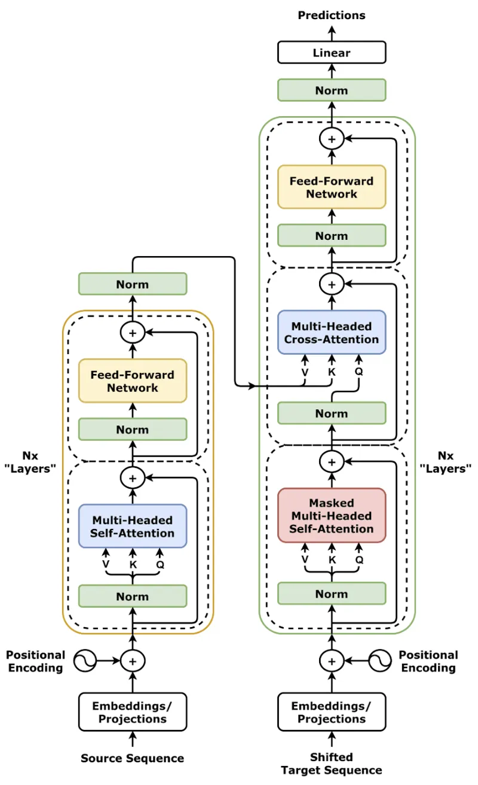
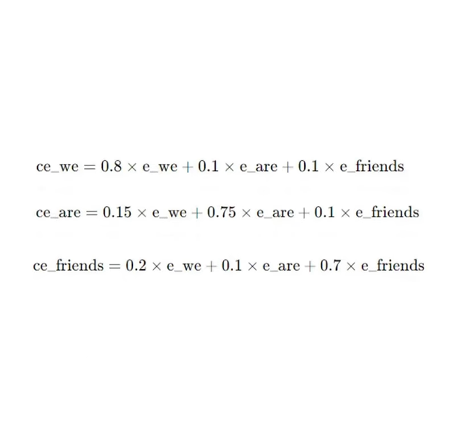

01 - Introduction to Transformer

Detailed Notes on Transformers and the AI Revolution
-
1. Introduction to Transformers
Transformers represent a monumental shift in neural network architecture, originally designed by Google researchers for sequence-to-sequence tasks. Unlike earlier models that processed data sequentially, Transformers analyze entire sequences concurrently. This fundamentally alters how machines understand context and relationships within data.
-
Examples of Sequence Tasks
Sequential data is everywhere in human communication and logic. Typical tasks include:
- Machine Translation: Converting a sentence from English to French, where the order of words carries the meaning.
- Text Summarization: Distilling a long sequence of document text into a short, concise sequence.
- Question Answering: Processing a sequence of question tokens and returning a sequence of answer tokens.
- Chatbots & Conversational AI: Maintaining context over a sequence of user messages and system replies.
- Speech Recognition: Translating continuous audio wave sequences into text token sequences.
The name Transformer stems from their primary function: they effectively transform one sequence into another while deeply understanding the internal relationships between every element.
-
-
2. Historical Background
-
The Beginning of the Transformer Era
In late 2017, a team of researchers at Google Brain and Google Research published what is arguably the most important AI paper of the 21st century:
“Attention Is All You Need”
Before this paper, the AI community heavily relied on Recurrent Neural Networks (RNNs) and Convolutional Neural Networks (CNNs) for sequence processing. This paper boldly proposed that the complex recurrence mechanisms could be entirely discarded in favor of a purely attention-based architecture.
-
Impact of the 2017 Paper
Aspect Effect AI Research Triggered a massive paradigm shift; nearly all major AI labs abandoned RNN research to focus on Transformers. NLP Completely replaced architectures like LSTMs, leading to immediate state-of-the-art breakthroughs in translation and comprehension benchmarks. Industry Paved the way for Large Language Models (LLMs) and laid the exact foundational architecture used by ChatGPT, Claude, and Gemini. Startups Ignited a trillion-dollar industry, enabling thousands of companies to build products around generative AI APIs. Science Rapidly adapted beyond text, leading to breakthroughs in predicting protein structures (biology) and generating novel drug compounds (medicine).
-
-
3. Core Definition of Transformers
-
What is a Transformer?
At its core, a Transformer is defined as:
A deep learning architecture that relies entirely on self-attention mechanisms to draw global dependencies between input and output, completely dispensing with sequential recurrence and convolutions.
Unlike legacy models (RNNs and LSTMs) which had to read a sentence word-by-word like a human reader, Transformers take a radically different approach:
- Simultaneous Processing: They ingest and process all words in a sequence simultaneously.
- Parallel Computation: Because there is no sequential bottleneck, their calculations can be parallelized across thousands of GPU cores.
- Infinite Scalability: This parallel nature means that if you add more computing power and more data, the Transformer continues to get smarter without hitting an architectural wall.
-
-
4. Transformer Architecture
-
Main Components
The standard Transformer relies on an elegant configuration of neural network sub-components, primarily divided into an Encoder (for understanding) and a Decoder (for generating). Within these blocks, several specialized layers do the heavy lifting:
Component Role in the Network Encoder Reads the entire input sequence at once, applies attention, and generates a rich, context-aware mathematical representation (embeddings) of the text. Decoder Takes the Encoder's representation and generates the output sequence one token at a time, using attention to look back at the input and its own previous outputs. Self-Attention The core engine. It calculates a mathematical "weight" representing how strongly every word relates to every other word in the sequence. Feed Forward Network A standard neural network applied to each position separately and identically, adding non-linear complexity and allowing the model to "memorize" facts. Layer Normalization Stabilizes the learning process by normalizing the inputs across the features, preventing the gradients from exploding or vanishing during training. Residual Connections "Skip connections" that bypass layers, allowing gradients to flow unimpeded through the deep network, which is crucial for training models with dozens of layers.
-
-
5. Self-Attention Mechanism
-
What is Self-Attention?
Self-attention is the mechanism that allows the model to look at the surrounding text to derive the true meaning of a specific word. It allows every token in a sentence to interact with every other token, calculating an "attention score" that dictates how much focus should be given to other words when encoding a specific word.
-
A Concrete Example
Consider the classic pronoun resolution sentence:
“The animal didn’t cross the street because it was tired.”
How does a machine know what "it" refers to? In a Transformer, when the self-attention mechanism processes the word "it", it calculates high attention scores connecting "it" back to "animal", and lower scores for "street". The model dynamically understands that the animal was tired, not the street.
-
Why Self-Attention Matters
Traditional RNN/LSTM Transformer Self-Attention Reads data word-by-word, creating a bottleneck. Reads all words together, analyzing the whole picture instantly. Strictly Sequential operations. Highly Parallel operations, perfect for modern GPUs. Extremely slow to train on large datasets. Exponentially faster training, enabling massive datasets. Weak long-term memory; forgets earlier words in long paragraphs. Perfect long-term memory; direct connections between all words regardless of distance. Architecturally hard to scale. Easily scalable to trillions of parameters.
-
-
6. The Death of Sequential Processing
-
The Paradigm Shift
Before Transformers, natural language processing models were trapped in the paradigm of human reading. An RNN read text exactly like you are reading this sentence: sequentially, from left to right, one word at a time. The death of this sequential processing was the catalyst for the modern AI boom.
By abandoning sequential recurrence, Transformers process whole documents as a single matrix operation. They don't read left-to-right; they view text holistically.
-
Strategic Advantage: Unlocking Hardware
Because sequential networks must wait for step $t-1$ to finish before computing step $t$, they cannot utilize modern hardware effectively. Transformers eliminated this dependency.
Parallelism
Transformers are perfectly designed to exploit matrix multiplication hardware:
- GPUs (Graphics Processing Units): Initially built for parallel pixel rendering, GPUs are ideal for parallel attention matrices.
- TPUs (Tensor Processing Units): Google's custom hardware designed specifically for these exact tensor operations.
- Distributed Clusters: Training can be split across thousands of GPUs simultaneously.
This hardware synergy allowed researchers to train models on Terabytes of internet data. This massive scaling is what unlocked "emergent intelligence" — where models suddenly learned logic, coding, and translation simply by predicting the next word on massive datasets.
-
-
7. Origin Story of Transformers
-
Evolution Through Three Major Papers
The Transformer didn't appear out of nowhere; it was the culmination of a rapid sequence of breakthroughs in how neural networks handled sequence mapping.
Year Research Paper Major Contribution 2014 Sequence to Sequence Learning with Neural Networks (Sutskever et al.) Introduced the Encoder-Decoder architecture. It used LSTMs to compress an input sentence into a fixed vector, then decode it into a translation. 2015 Neural Machine Translation by Jointly Learning to Align and Translate (Bahdanau et al.) Introduced the first Attention Mechanism. Realized compressing a whole sentence into one vector was a bottleneck, so it allowed the decoder to "look back" at specific encoder words. 2017 Attention Is All You Need (Vaswani et al.) The breakthrough. Realized that if attention is so good, we don't need the LSTMs at all. Introduced the Transformer architecture based entirely on Self-Attention.
-
-
8. Problem with Older Models (RNNs/LSTMs)
-
How RNNs Worked
Recurrent Neural Networks (RNNs) processed text by maintaining a "hidden state" that acted as memory. As it read each word sequentially, it updated this hidden state.
The "Context Vector" Bottleneck
In early Seq2Seq models, an entire paragraph had to be compressed into a single, fixed-size mathematical array known as the context vector. This forced the network to cram massive amounts of information into a tiny space. For long sentences, the network suffered from catastrophic forgetting—by the time it reached the end of the paragraph, the context vector had completely lost the information from the first sentence.
-
The LSTM Band-Aid
Long Short-Term Memory networks (LSTMs) were created to fix the RNN memory problem by introducing complex "gates" that decided what to remember and what to forget. While they improved memory handling significantly, they failed to fix the core architectural flaws:
- Sequential Bottlenecks: They still processed word-by-word, preventing parallel processing.
- Slow Training: Due to sequential constraints, training them on large datasets took an impractical amount of time.
- Poor Scalability: Adding more layers made the models highly unstable and susceptible to vanishing gradients.
-
-
9. Attention Mechanism
-
What Did Attention Solve?
Before the Transformer, the original "Attention" mechanism was added to LSTMs in 2015 to fix the context vector bottleneck. Instead of forcing the decoder to rely on a single, fixed-size summary vector, attention allowed the decoder to dynamically "look back" at the entire input sequence and create a custom context vector for every single output word.
-
Attention Weights
During generation, the model calculates mathematical Attention Weights. These weights act as a heat map, determining exactly which input words matter most for the current word being generated.
For example, when translating "European Economic Area" into French ("Espace Économique Européen"), the model dynamically shifts its highest attention weights backwards to properly handle the reverse adjective ordering in French. This dramatically improved both translation fidelity and long-context reasoning.
-
-
10. Transformer Revolution
-
Why Transformers Were Revolutionary
The Transformer took the 2015 attention concept and pushed it to its absolute logical extreme: applying attention to the input itself (Self-Attention) and discarding the RNN completely. This created a perfect storm of advantages.
Feature Systemic Impact Parallel Processing Uncorked hardware utilization, leading to massive scalability and the ability to process petabytes of training data. Self-Attention Created a flawless routing mechanism where distant words contextually inform each other directly, solving the long-term memory problem permanently. Transfer Learning Synergy Because they could ingest so much data, they became incredible at "learning to learn," democratizing AI through foundational models. Domain Flexibility The architecture made almost no assumptions about the data type, allowing it to seamlessly transition from text to images, code, and audio. Model Scaling Laws Proved that simply making the model bigger and giving it more data predictably improved its reasoning capabilities, birthing the era of giant LLMs.
-
-
11. Transfer Learning in NLP
-
One of the Biggest AI Breakthroughs
While Transformers provided the engine, Transfer Learning provided the fuel. Transfer learning in NLP involves taking knowledge learned from one massive task and applying it to a completely different, smaller task. The Transformer architecture popularized the two-step paradigm that defines modern AI:
Pre-training + Fine-tuning
-
Step 1: Pre-training (The Foundation)
Large foundational models (like GPT-3, LLaMA, BERT) undergo a massive unsupervised training phase. They are fed internet-scale datasets encompassing books, Wikipedia, websites, and research papers. Their only task is usually to "predict the next word" or "fill in the blank." By doing this trillions of times, the model implicitly learns grammar, facts, reasoning, and world knowledge. This phase costs millions of dollars and requires supercomputers.
-
Step 2: Fine-tuning (The Customization)
Once the foundation model possesses general intelligence, smaller organizations can download it and Fine-tune it. By showing the model just a few thousand examples of a specific task (e.g., medical diagnostics, legal document drafting, customer support), the model adapts its immense pre-trained knowledge to the specific domain.
This means a startup can build a world-class legal AI on a single GPU in an afternoon, entirely bypassing the need to train a model from scratch.
-
-
12. Democratization of AI
-
Before vs. After Transformers
The Era of Tech Giants
Before Transformers and Transfer Learning, if you wanted an AI to analyze medical records, you had to gather millions of medical records and train a custom LSTM from scratch. This meant advanced AI was exclusively locked behind the doors of massive tech giants who possessed both enormous datasets and the compute clusters necessary to process them.
The Open Source Explosion
After Transformers, organizations like OpenAI, Meta, and Google released their pre-trained models. The rise of open-source hubs like Hugging Face allowed developers anywhere in the world to download incredibly smart models and fine-tune them on small, local datasets. This completely leveled the playing field.
-
Quantifying the Benefits
Barrier to Entry How Transformers Reduced It Time Development cycles dropped from months of architectural tuning to days of simple fine-tuning. Cost Instead of millions of dollars in GPU compute, fine-tuning costs mere tens or hundreds of dollars. Data Scarcity Models no longer need millions of task-specific examples; thanks to zero-shot and few-shot learning, they often need less than a hundred. Complexity Unified architectures mean developers no longer need deep PhD-level math to build custom AI pipelines; simple API calls and libraries suffice.
-
-
13. Timeline of Transformer Evolution
-
Milestones in NLP
Year Key Development 2000–2014 RNNs, LSTMs, and statistical models dominate the slow-moving NLP landscape. 2014 The Sequence-to-Sequence (Encoder-Decoder) architecture is formalized, vastly improving translation. 2015 Attention mechanisms are developed, fixing the context vector bottleneck in LSTMs. 2017 Google publishes Attention Is All You Need, officially introducing the Transformer. 2018 OpenAI launches GPT-1 (Decoder-only), and Google launches BERT (Encoder-only), proving the power of Transfer Learning. 2020 Vision Transformers (ViT) prove that Transformers can beat CNNs in image processing. OpenAI releases GPT-3, demonstrating few-shot learning. 2021 The Generative AI explosion begins crossing into mainstream applications and biology (AlphaFold 2). 2022–Present ChatGPT is released, sparking a global AI arms race. Multimodal models (GPT-4, Gemini) become the new standard.
-
-
14. Generative AI Revolution
-
The Rise of GenAI
While early Transformers like BERT were analytical (they read text and categorized it), the scaling of Decoder-only Transformers (like the GPT series) ignited the Generative AI (GenAI) revolution. By training models to simply predict the next sequence token across massive datasets, researchers discovered that models developed a deep, emergent understanding of human logic, style, and creativity.
GenAI expanded rapidly from generating text to generating hyper-realistic images, composing music, producing video, and writing functional software code.
-
Major Applications Defining the Era
Tool / Model Primary Purpose & Modality ChatGPT / Claude Conversational AI capable of complex reasoning, drafting, and problem-solving (Text-to-Text). DALL·E 3 / Midjourney Advanced AI art generation capable of understanding complex compositional prompts (Text-to-Image). Sora / RunwayML Video generation models capable of synthesizing physically grounded, high-definition video clips (Text-to-Video). GitHub Copilot / Codex Natural language to code generation, fundamentally altering how software engineers write and debug programs (Text-to-Code). AlphaFold 3 Predicting the structures and interactions of all life's molecules, expanding far beyond simple proteins (Sequence-to-Structure).
-
-
15. Unification of Deep Learning
-
Convergence into a Universal Architecture
Historically, deep learning was heavily fragmented. If you were an AI researcher working on text, you used RNNs. If you worked on images, you used CNNs. If you worked on audio or reinforcement learning, you used entirely different frameworks. You could not easily share knowledge or architectures between domains.
The Transformer ended this fragmentation. Because the attention mechanism is a mathematically generic way of routing information between a set of tokens, it doesn't care what those tokens represent. A token can be a word piece, an image patch (Vision Transformer), or an audio spectrogram slice.
-
Old Paradigm vs Transformer Paradigm
Feature Old AI Paradigm Transformer Paradigm Architecture Approach Highly specialized, bespoke models for every unique task. One universal, mathematically generic architecture. Text Processing RNNs, LSTMs, GRUs Transformers (GPT, LLaMA, BERT) Image Processing CNNs (ResNet, VGG) Vision Transformers (ViT, Swin) Data Type Focus Strictly Single modality (text-only or image-only models). Natively Multi-modal (Text, Vision, and Audio combined). Hardware Scaling Hard limits hit relatively early; diminishing returns on large compute. Extremely scalable; adheres strictly to scaling laws offering consistent improvement.
-
-
16. Multi-Modal Capabilities
-
Breaking Down Data Silos
Because the Transformer architecture unified deep learning, it enabled the creation of Multi-Modal models. Instead of having separate brains for seeing and reading, models like GPT-4o and Gemini are trained simultaneously on text, images, and audio. The self-attention mechanism cross-references concepts across modalities—meaning the model understands that the word "dog", the image of a dog, and the sound of a bark all map to the exact same conceptual space in its neural weights.
-
Real-World Cross-Modal Synergies
Input Modality Output Modality Example Application Text Image Generative art (Midjourney, DALL-E) interpreting complex creative requests. Image + Text Text Visual Question Answering; providing a photo of a broken machine and asking the AI how to fix it. Audio Text + Audio Real-time, emotionally aware voice translation and conversational agents (GPT-4o Voice). Text Video Directing short films or generating B-roll footage purely from written scripts (Sora). Code + UI Screenshot Working Code Providing a sketch or screenshot of a website and the AI generating the React frontend code.
-
-
17. Transformers Beyond NLP
-
Expanding Horizons
The generic routing nature of the Transformer means it is now actively taking over fields that have absolutely nothing to do with human language.
Scientific Field Transformer Usage & Impact Computer Vision Vision Transformers (ViT) divide images into patches (treating them like words) and apply attention, beating CNNs in image classification benchmarks. Reinforcement Learning Decision Transformers model RL as a sequence modeling problem, predicting the optimal sequence of actions for game AI and robotics. Biology & Genomics Transformers map the "language" of DNA and amino acids, solving protein folding and genetic sequence prediction. Medicine Accelerating drug discovery by modeling the interaction sequences between target proteins and billions of potential molecular compounds. Robotics Vision-Language-Action (VLA) models use Transformers to translate human voice commands directly into robotic joint movements. Mathematics & Science Transformers are being used to discover novel matrix multiplication algorithms and model complex weather systems.
-
-
18. AlphaFold 2 — AI as a Scientist
-
The Protein Folding Problem
For over 50 years, the "Protein Folding Problem" stood as one of biology's grand challenges: how does a 1D sequence of amino acids fold into a functional 3D protein structure? This dictates almost all biological function and disease. DeepMind's AlphaFold 2 utilized heavily modified Transformer attention mechanisms (Evoformer) to evaluate the spatial relationships between amino acids, solving the problem with atomic accuracy.
-
Why It Marks a New Era
Traditional Biology Methods AlphaFold 2 (Transformer AI) Relied on X-ray crystallography and cryo-electron microscopy. Relies on pure computational inference and neural networks. Could take years of lab work to map a single protein structure. Predicts highly accurate structures in a matter of seconds. Cost millions of dollars in equipment and researcher time. Fully automated, mapping almost every known protein to science for free. Bottlenecked pharmaceutical and disease research. Dramatically accelerates targeted drug discovery and biotechnology engineering.
-
-
19. Advantages of Transformers
-
Core Architectural Benefits
Transformers have almost entirely monopolized deep learning for a set of very distinct, interconnected reasons:
Advantage In-Depth Explanation Infinite Scalability Because attention requires no sequential state, training can be infinitely split across parallel GPU clusters. They reliably obey scaling laws: more compute + more data = predictable capability increase. Transfer Learning Supremacy They excel at internalizing "world models" during unsupervised pre-training, making them incredibly adaptable and reusable for specialized downstream tasks via fine-tuning. Structural Flexibility The architecture is modular. You can use Encoder-only (BERT) for deep text analysis, Decoder-only (GPT) for generation, or full Encoder-Decoder (T5) for translation tasks. Universal Modality By simply changing how the input is tokenized, the exact same Transformer engine can process text, pixels, waveforms, or chemical structures. Massive Open Ecosystem The dominance of the architecture led to an unprecedented open-source community (Hugging Face), standardizing tooling, libraries, and model sharing. Integration Friendly Transformers seamlessly act as the "brain" for other systems, easily integrating into RL pipelines (RLHF) and Agentic frameworks.
-
-
20. Disadvantages of Transformers
-
1. High Computational Cost
The mathematical operation at the heart of self-attention requires calculating the relationship of every token to every other token. This creates a quadratic scaling cost ($O(N^2)$). For example, doubling the length of the input context doesn't double the compute required; it quadruples it. This mandates incredibly expensive infrastructure, with frontier models requiring hundreds of millions of dollars in specialized GPU clusters to train.
-
2. Energy Consumption
Training and deploying massive billion-parameter models consumes astonishing amounts of electricity. The cooling and power requirements for data centers running Transformer inference are massive, raising severe environmental concerns regarding carbon footprints and power grid strain.
-
3. Black Box Problem & Interpretability
Transformers distribute knowledge across billions of floating-point numbers in massive matrices. They are notoriously difficult to interpret. When a model provides an answer, it is exceptionally hard to trace why it chose that sequence of tokens. This "black box" nature creates critical safety bottlenecks for deployment in high-stakes fields like healthcare, autonomous driving, and the legal sector.
-
4. Bias, Ethics, and Hallucinations
Because foundational Transformers are trained on uncurated internet-scale data, they inherently internalize and regurgitate human biases, toxic language, and harmful stereotypes. Furthermore, because their fundamental objective is just "predict the next token," they are prone to hallucinations—confidently generating plausible but entirely factually incorrect information. Finally, ingesting copyrighted material for training has sparked massive ethical and legal debates.
-
-
21. Future of Transformers
-
Current Research Frontiers
While Transformers dominate today, research is heavily focused on mitigating their massive compute costs and improving their reliability.
Research Area Primary Goal & Techniques Architectural Efficiency Exploring linear-attention mechanisms (e.g., Mamba, RWKV, FlashAttention) to break the $O(N^2)$ quadratic context bottleneck, allowing models to read million-page books instantly. Quantization & Pruning Compressing massive models into 4-bit or 8-bit precision to dramatically reduce memory footprint, enabling LLMs to run locally on consumer laptops and phones without internet. Mechanistic Interpretability Reverse-engineering the neural networks to understand exactly which neurons store which facts, attempting to cure the "black box" problem. Agentic Workflows Moving from simple chatbots to autonomous "Agents" that can browse the web, use software tools, and self-correct their reasoning over long, multi-step tasks. Synthetic Data Generation As humanity runs out of high-quality internet text, using AI models to generate perfectly curated synthetic data to train the next generation of smarter models.
-
-
22. Specialized GPTs
-
The Shift to Small Language Models (SLMs) and Experts
We are moving away from relying solely on giant, expensive generalist models (like GPT-4). The future is heavily trending toward Mixture of Experts (MoE) and highly specialized, domain-specific models.
- Domain-Specific AI: Healthcare organizations will deploy "Medical GPTs" fine-tuned exclusively on peer-reviewed journals, ensuring zero hallucination. Law firms will use "Legal GPTs" strictly bound to case law.
- Efficiency & Privacy: Specialized models can be vastly smaller (e.g., 7 Billion parameters instead of 1 Trillion), meaning they are fast, cheap, and can run on secure, private servers to protect sensitive data.
- Routing Systems: Future OS integrations will likely feature an intelligent router that looks at a user's prompt and silently directs it to the most appropriate, specialized mini-Transformer.
-
-
23. Why Transformers Changed the World
-
The Universal Translator of the Universe
The most profound impact of the Transformer isn't just that it made chatbots smarter. It is that the Transformer mathematically proved that almost everything in the universe can be modeled as a sequence.
One Scalable Architecture
By discovering a scalable, parallelizable method to analyze sequences, humanity accidentally built a universal decoder engine. Whether it's translating the sequence of English words, the sequence of pixels in a video frame, the sequence of musical notes in a symphony, or the sequence of amino acids in human DNA—the Transformer learns the hidden patterns governing them all. It is the unifying architecture that finally unlocked General Purpose Artificial Intelligence.
-
-
24. Final Summary Table
Core Topic Primary Mechanism & Key Idea Paradigm Shift & Impact Key Examples / Architectures Transformer Architecture Uses self-attention (no sequential processing) to weigh relationships between all tokens simultaneously. Revolutionized AI by enabling fully parallelized training, replacing sequential bottlenecks of RNNs/LSTMs. Original Transformer (2017), BERT (Encoder), GPT (Decoder) Self-Attention Each token dynamically calculates attention weights for every other token in the sequence. Solves the long-term dependency problem; model understands context globally rather than locally. Multi-Head Attention, Scaled Dot-Product Attention Transfer Learning Train massive models on internet-scale data (Pre-training), then adapt to specific tasks (Fine-tuning). Democratized AI; small organizations can build powerful tools without needing supercomputers. Fine-tuning LLaMA, Custom ChatGPTs, LoRA techniques Multi-Modality Unified architecture capable of processing and mapping between disparate data types natively. Broke down silos in AI research, allowing single models to understand text, image, audio, and video simultaneously. CLIP, GPT-4V, Gemini, Sora (Video) Generative AI Scaled decoders predict the next token/pixel/frame with emergent reasoning capabilities. Shifted AI from purely analytical tools to creative engines capable of generating human-quality content. ChatGPT, DALL·E 3, Midjourney, GitHub Copilot AlphaFold 2 Adapts attention mechanisms to predict 3D protein structures from amino acid sequences. Solved a 50-year-old biology challenge, dramatically accelerating medical research and drug discovery. AlphaFold, RoseTTAFold Limitations / Disadvantages Quadratic scaling cost of attention ($O(N^2)$), black-box nature, and massive energy/data requirements. Raises ethical concerns around copyright, environmental impact, hallucinations, and hidden biases. Hallucinations, $O(N^2)$ context limits, Carbon Footprint The Future of Transformers Focus on efficiency (quantization, pruning), interpretability, and domain-expert models. Moving towards specialized, optimized models that run locally, alongside massive multimodal generalists. FlashAttention, MoE (Mixture of Experts), Edge AI
-
25. NLP Transformer Timeline
02 - What is Self Attention?
What is the Fundamental problem that NLP is trying to solve?
- The Fundamental problem that NLP is trying to solve is how to represent word as numbers, because the compute is good with numbers, not with words.
- The initial and critical step for any NLP task is to convert words into numerical representations. This conversion process is called vectorization.
Evolution of
Word Vectorization
Techniques
The following sections outline the progression of techniques for converting words into numerical data:
-
One-Hot Encoding: This is a basic technique where each unique word in a vocabulary is represented by a vector. The vector has a length equal to the size of the vocabulary, with a '1' at the index corresponding to the word and '0's everywhere else. For example, for one hot encoding the vocabulary could be represented as .- This method is inefficient and does not capture any semantic relationships between words.
-
Bag of Words: This method improves on one-hot encoding by considering the frequency of words in a sentence. Instead of just indicating the presence of a word, it counts how many times each word appears in a given sentence. For instance, in the sentence "mat cat mat", the bag-of-words representation, given the same vocabulary as above, would be . While this technique captures frequency, it still does not account for semantic relationships.
TF-IDF(Term Frequency-Inverse Document Frequency): This technique builds upon bag of words by considering the importance of a word in a document relative to a collection of documents.
The Power of Word Embeddings
Modern Transformer architecture highlights word embeddings as a significant advancement:
- Semantic Meaning: Word embeddings convert words into vectors in a way that captures their semantic meaning. This means that the numerical representations of words reflect not only the words themselves, but also the contexts they typically appear in.
- Training Process: Word embeddings are generated by training a neural network on a large dataset of text. This neural network learns to understand how words are used in different contexts. The result is an n-dimensional vector for each word.
- Vector Space: In the embedding space, semantically similar words have similar vector representations, meaning they are located close to each other. For example, the vectors for "king" and "queen" would be closer to each other than to "cricketer".
- Dimensionality: Each dimension of the word embedding vector can represent a particular semantic aspect of the word. For example, one dimension could represent "royalty," where "king" and "queen" would have high values, while "cricketer" would have a lower value. Another dimension might represent "athleticism," where "cricketer" would have a high value, and "king" and "queen" would have lower values.
The Limitation of Static Word Embeddings
Despite their power, there is a key limitation of traditional word embeddings: they capture the average meaning of a word across the entire training dataset.
- Context
Insensitivity: Word embeddings are
static, meaning that a word always has the same vector representation,
regardless of the context in which it is used.
- Example of "Apple": This issue is illustrated with the word "apple." If a word embedding model is trained on a dataset where "apple" appears more frequently as a fruit, its vector will be skewed towards representing "apple" as a fruit, even when it's used to mean a technology company. The word embedding is created once, and then used repeatedly.
- Average Meaning Capture: The word embedding for "apple" will be an average of its usage as a fruit and a company. Consider an example of a two-dimensional vector where one dimension represents "test" and the other represents "technology". If in the training data apple appears more often as a fruit then the "test" dimension will have a higher value and the "technology" dimension will have a lower value. This could be problematic in the context of the sentence “Apple launched a new phone…”, where “apple” should be understood as referring to a technology company rather than a fruit.
- Problematic for Translation: As an example, an NLP translation application, given the sentence "Apple launched a new phone while I was eating an orange," would vectorize all the words including "apple", but would not be able to take into account the contextual use of the word.
Self-Attention: Generating Contextual Embeddings
This is where self-attention comes in as the solution to the problem of static word embeddings.
- Contextual Understanding: Self-attention is a mechanism that generates contextual word embeddings. This means that the vector representation of a word changes dynamically based on the context in which it is used in a sentence.
- Dynamic Embeddings: Unlike static word embeddings, contextual embeddings are generated on the fly. They consider the relationships between all the words in the sentence to determine the most appropriate representation for each word.
- Mechanism:
Self-attention takes the static embeddings of all the words in a sentence as
input. It performs some calculations (the specifics of which are to be
covered in the following sections) to generate new contextual embeddings for
each
word. The output embeddings are "smart" because they are adjusted based on
the specific context of each word.
- Example with "Apple": In the sentence "Apple launched a new phone...", a self-attention mechanism should be able to generate a contextual embedding for "apple" that reflects its use as a technology company. It would increase the "technology" component and decrease the "test" component of the embedding vector, which is the reverse of the word embedding created for the word "apple" when it is mostly used as a fruit in the training data. In addition, it should do so without confusing the reference to "orange" as a fruit.
- Use in Transformers:
Self-attention is used in advanced NLP architectures, such as Transformers.
- How it works:
- Self-attention takes static word embeddings of all the words in a sentence as input.
- It performs calculations to generate new, contextual embeddings for each word. These embeddings reflect the specific context of each word.
- The contextual embeddings are "smart" because they are adjusted based on the other words in the sentence, allowing the model to understand how a particular word is being used.
- Dimensional Space
Representation:
- Word embeddings are represented in a high-dimensional space, where each dimension captures a different aspect of the word's meaning.
- For example, one dimension might represent "royalty," another "athleticism," and so on.
- In this space, words with similar meanings are located close to each other, allowing the model to understand relationships between words.
- How it works:
Real-world applications Where self-Attention plays a key role
- Large Language Models (LLMs): Including models like ChatGPT, GPT-3, and similar models that generate human-like text.
- Machine Translation: Enabling more accurate and context-aware translation between languages.
- Text Summarization: Creating concise summaries of longer texts while preserving the core meaning.
- Sentiment Analysis: Determining the emotional tone or attitude expressed in a piece of text.
- Named Entity Recognition (NER): Identifying and categorizing named entities (e.g., people, organizations, locations) in text.
- Question Answering Systems: Improving the ability of systems to understand and answer complex questions.
- Chatbots and Conversational AI: Powering more natural and engaging conversations between humans and machines.
- Code Generation: Assisting in the generation of code based on natural language descriptions.
Summary
In summary, self-attention is a mechanism that enhances word embeddings by making them context-aware. Self-attention takes static word embeddings as input and generates dynamic, contextual embeddings that are better suited for NLP applications. The primary focus here is to establish the need for self-attention, while subsequent sections delve into the mechanics of how self-attention works. The next section focuses on the query, key, and value vectors.
💡 Vocabulary Representation & Self-Attention Comparison
| Technique Name | Mechanism | Pros / Strengths | Cons / Limitations | Contextual Awareness (Yes/No) | Output Type | Key Applications |
|---|---|---|---|---|---|---|
| Self-Attention Mechanism | Performs calculations using query, key, and value vectors to adjust static embeddings based on neighboring words in a sentence. | Generates dynamic embeddings that understand specific word contexts and resolve ambiguity. | Requires complex mathematical calculations. | Yes | Dynamic contextual embeddings | Transformers, Large Language Models (LLMs), Generative AI, Machine Translation |
| Word Embeddings (Static) | Neural networks trained on large datasets to convert words into n-dimensional vectors based on semantic similarity. | Captures semantic meaning; similar words occupy similar positions in geometric space. | Represents an "average meaning"; cannot distinguish between different meanings of the same word based on context. | No | n-dimensional dense vectors (e.g., 64, 256, 512) | Sentiment analysis, Named Entity Recognition (NER), general NLP tasks |
| TF-IDF | Weights the importance of words by multiplying Term Frequency by Inverse Document Frequency. | Improves upon Bag of Words by considering word importance across an entire document corpus. | Does not capture semantic meaning or contextual nuances. | No | Sparse vectors (weighted) | Document classification, information retrieval |
| Bag of Words (BoW) | Counts the frequency of each unique word within a specific document or sentence. | Captures word frequency, offering an improvement over binary one-hot representation. | Lacks semantic understanding and context; remains a relatively simple representation. | No | Sparse vectors (counts) | Simple NLP applications, sentiment analysis |
| One-Hot Encoding | Assigns a unique vector where one index is 1 and all others are 0 based on the presence of a word in a fixed vocabulary. | Simple and original method for converting words to numerical representations. | Inefficient for large vocabularies; creates high-dimensional, sparse vectors. | No | Sparse vectors (binary) | Basic vectorization in early NLP tasks |
03 - Self Attention in Transformers
Self-attention mechanism in the Transformer model
1. Input Representation
- Each word in the input sequence
(e.g.,
money,bank,grows) is first converted into an embedding vector.
- These embeddings capture the semantic meaning of words in a high-dimensional space.
2. Linear Transformations
- Each word embedding is
transformed into three different vectors:
- Query (Q)
- Key (K)
- Value (V)
- This transformation is done
- vectors capture different perspectives of each word.
- are trainable weight matrices. These matrices are initialized with random values and then learned during training through backpropagation
- In self-attention, a linear
transformation is used to convert a word's
embedding into three distinct vectors: the query
(Q), key (K), and value
(V) vectors. This process is essential for enabling
the self-attention mechanism to understand the different roles
each word plays within a sentence. The transformation is
achieved through matrix multiplication using learnable
weight matrices.
Here's a breakdown of the process:
- Weight
Matrices: Three separate weight
matrices are introduced:
Wq,Wk, andWv. These matrices are learnable parameters, meaning their values are adjusted during the training process.
- Matrix
Multiplication: Each word embedding is
multiplied by these matrices to generate the three
vectors:
- The word
embedding, represented as
X, is multiplied by
Wqto produce the query vector (Q).
-
Xis multiplied byWkto produce the key vector (K).
-
Xis multiplied byWvto produce the value vector (V).
- These operations can be expressed mathematically as:
- The word
embedding, represented as
X, is multiplied by
- Purpose of
Transformation: This transformation
allows each of the
Q,K, andVvectors to capture different aspects of the word's meaning and relationships within the context of the sentence. The query vector is used to ask other words how similar they are, the key vector acts as a response, and the value vector is the actual information content of the word.
- Learnable Parameters: The weight matrices are not static. They are initialized with random values and then learned during training through a process of backpropagation. The matrices are adjusted based on the loss calculated during training, which allows them to learn how to generate optimal query, key, and value vectors for the given task. This means the transformation is task specific.
- Shared
Matrices: The same weight matrices
(
Wq,Wk, andWv) are used for every word in the sentence. This is crucial for efficient computation because the same operations can be applied to all the word embeddings at the same time, which is critical for the parallel processing capabilities of self-attention.
By using this linear transformation, self-attention can dynamically generate contextualized representations of words, allowing it to better capture the nuances of language. The learned weights of the transformation matrices allow the model to adjust the way the embeddings are transformed based on the specific task at hand, making the self-attention mechanism highly flexible and adaptable.
- Weight
Matrices: Three separate weight
matrices are introduced:
3. Scoring Attention (Similarity Calculation)
- To determine how much
focus each word should have on other words, we
compute the dot product of each query with all
key vectors:
- This results in a score matrix (yellow box in the lower section of the image).
- These scores measure how relevant each word is to another word in the sequence.
- In self-attention,
"scoring attention" refers to the process of
calculating the similarity between a query
vector and a key vector. This process
determines how much attention each word should pay
to other words in the sentence when generating
contextual embeddings.
Here's a more detailed explanation:
-
Query, Key, and Value
Vectors: For each word in a
sentence, three vectors are generated
from its word embedding: a query vector,
a key vector, and a value vector. These
vectors are created by multiplying the
word embedding by three different
matrices
(
Wq,Wk, andWv).
- Calculating Similarity: The similarity between words is determined by taking the dot product of the query vector of one word with the key vector of another word. The dot product is a mathematical operation that quantifies the similarity between two vectors.
- Similarity Scores: The dot product of the query and key vectors produces a scalar value, which represents the similarity score. A higher score indicates a higher level of similarity between the two words.
- Normalization: These similarity scores are then normalized, often using the softmax function, which converts them into weights. The softmax function ensures that the weights sum up to one and can be interpreted as probabilities. The softmax function takes the dot product scores and generates normalized weights that can be interpreted as the percentage of the word made up of the other words.
- Weighted Sum: The normalized scores are then used to calculate a weighted sum of the value vectors. This weighted sum produces the contextualized embedding for the word. The words with higher similarity scores will contribute more to the contextualized embedding.
-
Task Specificity:
Because the query, key and value vectors
are generated from the original
embeddings using the trainable matrices
Wq,Wk, andWv, the attention scores are learned based on the specific training data. This process allows self-attention to create task-specific contextual embeddings.
-
Query, Key, and Value
Vectors: For each word in a
sentence, three vectors are generated
from its word embedding: a query vector,
a key vector, and a value vector. These
vectors are created by multiplying the
word embedding by three different
matrices
(
The core idea of scoring attention is to determine how much each word should be influenced by other words in the sentence. By calculating the dot product between the query and key vectors, self-attention can identify which words are most relevant to each other. Then, using a weighted sum of the value vectors it generates a contextually rich representation of the words. This dynamic and contextual approach allows the model to understand the nuances of language and capture complex relationships between words.
4. Applying Softmax for Attention Weights
- The scores are normalized using the Softmax function:
- This converts scores into probabilities (attention weights), ensuring they sum up to 1.
- Higher scores mean stronger attention between words.
- In self-attention, the
softmax function is used to normalize the
similarity scores between words, converting them into
attention weights that sum up to 1. This
process ensures that the model can interpret these scores as
probabilities, representing how much each word should attend to
other words in the sentence.
Here’s a breakdown of how the softmax function is applied in self-attention:
- Similarity Scores: First, the similarity between a word's query vector (Q) and other words' key vectors (K) are calculated using the dot product. These dot products result in raw similarity scores.
- Softmax
Normalization: The raw similarity
scores are then passed through the softmax
function, which converts these scores
into a probability distribution. The formula for
this operation is:
- where:
- αᵢⱼ is the attention weight for the word relative to the word.
- Qᵢ is the query vector for the word.
- Kⱼ is the key vector for the word.
- The numerator represents the exponential of the dot product between the query and the key.
- The denominator is the sum of the exponentials of the dot products between the query and all other key vectors in the sentence.
- where:
-
Probabilities: The softmax function
transforms the scores into values between
0and1, which are interpreted as probabilities or attention weights. These weights indicate how much attention a word should pay to other words when generating its contextualized embedding.
- Sum to One: The softmax function ensures that the attention weights for a given word sum up to 1, creating a probability distribution across all the words in the sentence.
- Stronger Attention: Higher weights indicate stronger attention between words, meaning the word with a higher weight will contribute more to the contextualized embedding of the current word.
In essence, the softmax function normalizes the similarity scores obtained from the dot product of query and key vectors, transforming them into attention weights that determine the influence of other words on a given word. This step is crucial for creating context-aware word embeddings that reflect the relationships between words in a sentence.
5. Weighted Sum of Values
- In self-attention, a
weighted sum of value vectors is used to create
the final contextualized representation of each word. This
process combines information from all words in the sentence,
weighted by the attention scores calculated earlier.
Here's a breakdown of how the weighted sum is applied:
- Attention Weights: After calculating similarity scores between query and key vectors, the softmax function converts them into attention weights (αᵢⱼ) that sum up to one and can be interpreted as probabilities.
- Value Vectors: Each word also has a value vector (Vⱼ), which is derived from its word embedding using a linear transformation.
- Weighted Sum: The final representation (Outputᵢ) for a word is calculated by taking a weighted sum of all value vectors (Vⱼ) in the sentence, using the attention weights as the weights:
- This means that the value vector of each word is multiplied by the attention weight corresponding to the relationship between that word and the word currently being represented, then all these weighted vectors are summed together.
- Contextual Representation: The result of this weighted sum is a new vector that is the contextualized representation of the word. This vector encodes the meaning of the word in the context of the entire sentence, emphasizing the words to which it should pay the most attention according to the attention weights.
In short, the weighted sum of value vectors allows each word's representation to be a mixture of the information from all other words in the sentence. The attention weights determine how much each word contributes to this mixture, thus creating a context-rich representation that captures the relationships between words.
6. Final Output
- The resulting output vector contains the contextualized representation of each word.
- These vectors are then passed to subsequent Transformer layers for deeper understanding.
Why Word embeddings fail to
capture the semantic
meaning of a sentence?
Word embeddings fail to capture the semantic meaning of
a sentence because they are static. This means that
a word will always have the same embedding, regardless of the
context in which it appears. For example, the word "bank" in "money
bank" and "river bank" would have the same embedding, even though
the meanings are different. This is why
contextual embeddingsare needed, which
are dynamic and change based on the surrounding words.
Self-attention is a mechanism that converts static embeddings into
dynamic, contextual embeddings.
What problem with word embeddings does self-attention address?
Self-attention addresses the problem of static word embeddings failing to capture the semantic meaning of words in different contexts.
Here's a breakdown:
- Static embeddings assign the same numerical representation to a word regardless of its context. For example, the word "bank" would have the same embedding in both "money bank" and "river bank".
- This is problematic because the meaning of a word can change depending on the words around it.
- Self-attention is a mechanism that converts these static embeddings into dynamic, contextual embeddings. These contextual embeddings change based on the other words in the sentence.
- Self-attention allows the model to understand that "bank" in "money bank" refers to a financial institution, while "bank" in "river bank" refers to the side of a river.
- The contextual embeddings generated by self-attention capture the relationship between words in a sentence.
Why are three vectors generated from one embedding?
Self-attention uses three vectors derived from a single word embedding to better capture the nuances of word meaning in context. The original embedding is transformed into these three vectors through multiplication by three different matrices, and .
Using three
separate vectors is more effective than using the same embedding for
query, key, and value. This
is because each vector can be optimized for its specific task:
- The
queryvector is optimized for finding relevant words.
- The key vector is optimized for representing the word in the context of the query.
- The value vector is optimized for providing the information needed to calculate the contextual embedding.
This approach
allows self-attention to create
task-specific contextual
embeddings rather than the general
contextual embeddings generated by the initial first principle
approach.
The Problem with Static Word Embeddings:
- Traditional word embeddings represent words as numbers, capturing their meaning.
- However, these embeddings are static, meaning a word has the same representation regardless of its context i.e. semantic meaning is not captured.
- For instance, "bank" in "money bank" and "river bank" would have the same embedding, even though their meanings are different.
The Need for Contextual Embeddings:
- Contextual embeddings are dynamic and change based on the context in which the word is used.
- Self-attention is a mechanism that transforms static word embeddings into dynamic, contextual embeddings.
Self-Attention from First Principles:
- We can use the example of the sentences "Money bank grows" and "River bank flows" to demonstrate the problem with static embeddings.
- Instead of representing "bank" as just "bank", the presenter proposes representing it as a combination of the words surrounding it, thus capturing context.
- This idea is then translated into the language of word embeddings, with the new embedding of a word being a weighted sum of the embeddings of the surrounding words.
- The weights represent the similarity between the word embeddings, which can be calculated using the dot product.
Calculating Contextual Embeddings:
- The dot products between word embeddings give similarity scores.
- These scores are normalized using the softmax function so they represent probabilities that sum to one.
- The normalized weights are then used to calculate a weighted sum of the original word embeddings, resulting in the new contextual embedding.
Review of the Initial Approach:
- The calculation of contextual embeddings can be done in parallel using matrix operations, making it computationally efficient.
- However, the initial approach has no learning parameters; it only involves dot products and the softmax operation.
- This means the generated embeddings are not task-specific and may not perform well in specific NLP tasks such as translation.
The Need for Task-Specific Embeddings:
- Task-specific contextual embeddings are needed for optimal performance in NLP tasks.
- The model should learn from the task-specific data to generate better embeddings, meaning we need to introduce learnable parameters into the self-attention process.
Roles of Word Embeddings in Self-Attention:
- Each word's embedding plays
three distinct roles in self-attention:
- Query: When a word asks other words about their similarity to itself.
- Key: When a word replies to other words' queries.
- Value: When the weighted sum of embeddings is calculated.
Separation of Concerns:
- It's not ideal for a single embedding vector to perform all three roles. It's better to transform it into three different vectors, each responsible for a specific role.
- It is better to have a concise profile (key), a targeted search (query), and a personalized match strategy (value) instead of using their entire autobiography for each of those aspects.
Generating
Query,
Key, and
Value
Vectors:
- These three new vectors (query, key, value) are generated using data, the model learns to optimize these vectors through training.
- This is done through linear transformations via matrix multiplication.
- The embedding vector is multiplied
by three different matrices:
Wq(for query),Wk(for key), andWv(for value).
- The values within these matrices are not predetermined but are learned through the training process.
- The Refined Self-Attention
Mechanism:
- Each word's embedding is transformed into its query, key, and value vectors using the learned matrices Wq, Wk, and Wv.
- The same
weight matrices
(
Wq,Wk,Wv) are applied to all words in the sentence.
- These vectors are then used to calculate contextual embeddings as before (using dot products and softmax).
- The entire process is still highly parallelizable, allowing for efficient computation on GPUs.
- Task-Specific
Embeddings:
- The result of this refined self-attention mechanism is task-specific contextual embeddings, which are better suited for various NLP tasks.
what is separation of concerns and why this is important?
Separation of
concerns refers to the idea of transforming
a word embedding into three distinct vectors: query, key,
and value, instead of using the same embedding vector
for all three roles. The rationale behind this is that using a
single vector for all three purposes may hinder the effectiveness of
each role. Separation of concerns allows each vector to
focus on its specific function, resulting in a more
efficient and effective self-attention mechanism.
04 - Scaled Dot Product Attention
Problem:
High
variance is a problem because as the dimensionality (dd) of
the vectors increases, the variance of the dot product also
increases. This causes the softmax
function to assign very high probabilities to large values and
very low probabilities to small values. During training, when
updating the weight matrices (Wq,
Wk ,
Wv
W_q,
W_k,
W_v) using back propagation, the
gradients are calculated to adjust the parameters. However, back
propagation focuses more on larger values, assigning them higher
importance while ignoring smaller values. As a result, some
corresponding parameters experience vanishing gradients, meaning
their gradient values become extremely small. If these gradients
become too small, the parameters will not be updated
effectively, preventing proper learning. This leads to a poor
training process and an unstable self-attention mechanism.
Fix:
Scale the dot
product by dividing with (dimension of key vectors)
to stabilize variance, ensuring balanced softmax probabilities and
gradients, preventing vanishing gradients.
What role does scaling play in self-attention mechanisms?
Scaling in self-attention mechanisms is essential to
prevent high variance in dot product scores, which can
negatively impact training. Here's why scaling is needed and how it
helps:
Role of Scaling in Self-Attention Mechanisms
Scaling in self-attention mechanisms is a crucial step that addresses the issue of high variance in the dot products of query (Q) and key (K) matrices, which can negatively impact the training process. Here's a breakdown of why and how scaling is used:
🔹 The Problem: High Variance in Dot Products
- In self-attention, the query (Q) and key (K) matrices are multiplied to produce a matrix of dot product scores.
- These dot products represent the relationships between different parts of the input.
- As the dimensionality of the vectors increases, the variance of the dot product scores also increases.
- High variance
means:
- Some scores become very large, while others become very small.
🔹 Impact of High Variance
- Softmax Distortion
- The softmax function converts these scores into probabilities.
- When variance is high, softmax assigns very high probabilities to large scores and very low probabilities to small scores.
- This leads to a few attention scores dominating the attention mechanism.
- Unstable Training
- During backpropagation, the gradients associated with smaller scores become vanishingly small.
- This prevents those parts of the input from being effectively learned, while training focuses too much on large scores.
- Analogy
- Imagine a classroom where some students are very tall and others are very short.
- If the teacher only notices the tall students, they will focus on their questions, while the shorter students' questions go unanswered.
- Similarly, in self-attention, the model risks learning only a few parts of the input and ignoring the rest.
🔹 The Solution: Scaling
- To address this problem, the dot product matrix is scaled by a factor of 1 / √dₖ, where dₖ is the dimension of the key vectors.
- Why √dₖ?
- The scaling factor is based on the mathematical relationship between dimensionality and variance.
- The variance of dot products increases linearly with dimensionality.
- Dividing by the square root of the dimension controls this variance.
- How it Works
- Dividing by √dₖ ensures that the variance remains constant, regardless of the vector dimensions.
- Mathematical Rule
- If a random variable
Xhas a varianceVar(X), then a new variableY = cX(where c is a constant) will have a variance ofc²Var(X).
- By dividing
by √dₖ, the variance is effectively
reduced by
dₖ.
- If a random variable
- Variance Control
- This ensures the variance is stable across different input dimensions.
🔹 Benefits of Scaling
- Stable Softmax
- With reduced variance, softmax produces more balanced probabilities.
- This prevents a few scores from dominating the attention mechanism.
- Stable Training
- Scaling keeps gradients consistent, leading to a more stable learning process.
- This ensures that the model effectively learns relationships across different input parts.
- Consistent
Learning
- Ensures all parts of the input contribute to learning, rather than focusing on only a few dominant parts.
Therefore Scaling
by 1/√dₖ is an essential component of
self-attention mechanisms. It:
✔ Prevents high variance in dot product scores.
✔ Ensures stable training by avoiding gradient instability.
✔ Balances attention so all input parts are considered.
✔ Leads to more effective learning and model performance.
How Does the Dimensionality of Vectors Affect Self-Attention?
- Low dimension (d = 3, red) → Dot products are tightly clustered near 0 (low variance).
- Medium dimension (d = 100, green) → Slightly wider spread of values.
- High dimension (d = 1000, blue) → Much broader distribution, meaning higher variance.
🔹 Key takeaway: Higher dimensions cause dot products to have a wider range of values, leading to unstable attention scores, which is why scaling (1/√dₖ) is necessary.
🔹 Low vs. High Dimensionality
- Low-dimensional
vectors
- Produce dot products with low variance.
- High-dimensional
vectors
- Produce dot products with high variance because dot products involve more values.
- This increases the range of possible values, leading to higher variance.
🔹 Softmax and Training Instability
- The dot product matrix is passed through the softmax function to obtain attention weights.
- Softmax tends to:
- Assign very high probabilities to large values.
- Assign very low probabilities to small values.
- High variance in dot products → Extreme probabilities after softmax → Training instability.
🔹 Gradient Issues
- During
backpropagation:
- The model focuses too much on large probabilities.
- Small probabilities are ignored, leading to a vanishing gradient problem.
- Parameters associated with small probabilities do not get updated, slowing down learning.
Analogy
- Imagine a classroom with students of different heights.
- If a teacher only notices the taller students, they answer only their questions.
- Shorter students get ignored, just like small attention weights in self-attention.
🔹 The Need for Scaling
- To control the effect of high dimensionality on variance and stabilize training, the dot products are scaled by: Dividing by the square root of the dimensionality of the key vectors (√dₖ).
- Effect of Scaling:
- Reduces variance in the dot product matrix.
- Balances attention weights after softmax.
🔹 Why the Square Root of the Dimension?
- Ensures variance remains constant, even if the dimension changes.
🔹 Final Result
- Applying the scaling factor
(1/√dₖ) to dot products in self-attention:
✔ Prevents extreme values in softmax.
✔ Ensures stable attention weights.
✔ Makes training smoother and more effective.
✔ Works well across different vector dimensions.
Why Does High Dimensionality Cause Instability in Training?
- Increased Variance: As dimensionality increases, the variance of dot product scores grows linearly. This means some scores become very large, while others remain small.
- Softmax Distortion: Softmax amplifies the differences—high scores get extremely high probabilities, and small scores become almost zero, causing some tokens to dominate.
- Training Focus Issue: The model prioritizes learning from large scores while ignoring smaller ones, leading to imbalanced learning.
- Vanishing Gradients: Small scores receive tiny gradients, making it hard for the model to learn from them, similar to how a teacher may only notice tall students in a classroom.
- Unstable Training: The model struggles to learn relationships across all inputs, leading to poor generalization.
- Solution – Scaling: Dividing dot products by √dₖ reduces variance, balances softmax outputs, and ensures stable learning across all tokens.
why this specific scaling factor is used is used?
- Linear Growth of
Variance: The variance of dot product scores grows
linearly with the dimensionality of the vectors. If the variance
of the dot product of two one-dimensional vectors is
Var(x), the variance of the dot product of twoddimensional vectors isd*Var(x). This means that as the dimensionality of the vectors (dₖ) increases, the variance of the dot products increases proportionally.
Probability theory regarding the variance of a scaled random variable:
Step-by-Step Explanation
Step 1: Definition of Variance
The variance of a random variable is given by:
where:
- is the expected value (mean) of
-
represents the expected
squared deviationfrom the mean.
Step 2: Define the Scaled Random Variable
We define a new random variable as:
where is a constant.
Step 3: Compute the Mean of
Using the linearity of expectation:
Step 4: Compute the Variance of YY
By definition:
Substituting and , we get:
Factor out :
Since expectation is linear, we can take outside:
Since the expectation inside is just the definition of variance:
This result shows that when a random variable is scaled by a constant , its variance is scaled by , which has applications in machine learning, deep learning, and signal processing.
Scaling Key Mathematical Concepts:
- Linear Growth of Variance:
- The variance of the dot
product of two random vectors scales linearly with
the dimensionality
d.- If
Var(x)is the variance of the dot product in one dimension, then inddimensions:
- This follows from the sum of independent random variables, assuming each dimension contributes additively.
- If
- Scaling Rule for Variance:
- If a random
variable
xhas varianceVar(x), scaling by a constantcresults in:
- This is fundamental in understanding normalization techniques.
- If a random
variable
- Justification for Scaling by
:
- Since
variance grows linearly with
d, normalizing by ensures that the variance remains stable:
- This is commonly applied in weight initialization (e.g., Xavier/Glorot initialization in neural networks) to keep activations balanced.
- Since
variance grows linearly with
- The variance of the dot
product of two random vectors scales linearly with
the dimensionality
05 - Self-Attention Geometric Intuition
- The example given using the words "river bank" shows how the contextual embedding of "bank" changes when the context is changed from "money" to "river"
1. Initial Word Embeddings
The sentence is: “money, bank”
Each word is converted into a vector (embedding).
- \(e_{money}\)
- \(e_{bank}\)
These vectors represent the semantic meaning of words in vector space.
Geometric View
- Every word = an arrow from the origin.
- Direction = meaning.
- Similar directions → related meanings.
In the diagram:
- \(e_{money}\) points upward.
- \(e_{bank}\) points more horizontally.
This means both words have different semantic positions.
2. Self-Attention Uses Three Transformations
The embedding vectors are transformed into:
- Query vectors (Q)
- Key vectors (K)
- Value vectors (V)
Using three learned matrices:
3. Linear Transformation Intuition
Each matrix changes the direction and scale of the original embeddings.
From the image:
Query Space
Transforms:
- \(e_{money} \rightarrow q_{money}\)
- \(e_{bank} \rightarrow q_{bank}\)
Key Space
Transforms:
- \(e_{money} \rightarrow k_{money}\)
- \(e_{bank} \rightarrow k_{bank}\)
Value Space
Transforms:
- \(e_{money} \rightarrow v_{money}\)
- \(e_{bank} \rightarrow v_{bank}\)
4. Geometric Meaning of Q, K, and V
Query (Q)
Query asks:
“What information am I searching for?”
Example from image:
- \(q_{bank}\) searches for related information.
Key (K)
Key represents:
“What information do I contain?”
Dot product between Query and Key measures similarity.
Value (V)
Value contains the actual information that will be combined.
Final output is built using Value vectors.
5. Attention Score Computation
The image computes attention for the word: bank
Using:
From the diagram:
6. Dot Product = Geometric Alignment
The dot product measures how aligned two vectors are.
Interpretation
Small Dot Product
Vectors point in different directions. → Weak relation
Large Dot Product
Vectors point in similar directions. → Strong relation
In the image:
Meaning:
- \(q_{bank}\) aligns much more strongly with \(k_{bank}\)
- So the word bank attends more to itself
7. Scaling Step
The scores are scaled using:
From the image:
So:
Scaled scores:
8. Why Scaling?
Without scaling:
- Dot products become too large.
- Softmax becomes unstable.
- One vector dominates completely.
Scaling keeps values numerically stable.
9. Softmax Converts Scores into Weights
Softmax transforms scores into probabilities.
From the image:
Interpretation:
- bank gives:
- 20% attention to money
- 80% attention to itself
10. Weighted Value Combination
Now attention weights multiply Value vectors.
From the diagram:
These scaled vectors are added together.
11. Vector Addition Geometry
The image shows vector addition geometrically.
Important Idea
Self-attention does not choose one vector. It blends vectors together.
The resultant vector becomes:
12. Final Attention Output
Geometrically:
- The final vector points closer to \(v_{bank}\)
- Because its weight is larger (0.8)
This is exactly shown in the resultant vector diagram.
13. Geometric Intuition of Self-Attention
The image compares self-attention to: Gravity / Pull
Words attract other relevant words.
In the diagram:
- \(e_{money}\)
- \(e_{bank}\)
pull each other based on semantic similarity. More aligned vectors create stronger attraction.
14. Complete Flow of Self-Attention
Step-by-Step Pipeline
- Step 1 — Input Embeddings
\[ e_{money}, e_{bank} \] - Step 2 — Linear Transformations
Generate: Queries, Keys, Values - Step 3 — Similarity Scores
Using dot products:\[ QK^T \] - Step 4 — Scaling
\[ \frac{QK^T}{\sqrt{d_k}} \] - Step 5 — Softmax
Convert scores into attention weights. - Step 6 — Weighted Sum
\[ \text{Attention}(Q,K,V) = \text{Softmax}\left(\frac{QK^T}{\sqrt{d_k}}\right)V \] - Step 7 — Final Contextual Vector
\[ y_{bank} \]
15. Core Geometric Insight
Self-attention can be understood geometrically as:
- Words are vectors in space.
- Queries search directions.
- Keys provide matching directions.
- Dot products measure alignment.
- Softmax determines attraction strength.
- Values are blended using weighted vector addition.
- Final vectors shift toward semantically important words.
16. Important Observations from the Diagram
- Observation 1: Self-attention is entirely vector geometry.
- Observation 2: Dot product acts like similarity measurement.
- Observation 3: Attention weights determine vector influence.
- Observation 4: Final representation is a weighted geometric mixture.
17. Final Intuition
Self-attention is:
“A mechanism where vectors pull related vectors toward themselves and create a new contextual representation through weighted geometric combination.”
06 - Multi-head Attention in Transformers

{kind=link}
{kind=link}
{kind=link}
{kind=link}
{kind=link}
{kind=link}
{kind=link}
{kind=link}
{kind=link}
{kind=link}
{kind=link}
{kind=link}
{kind=link}
Dimension Changes
1. Input Embeddings
- Each word (e.g.,
Money,Bank) is represented as a512- dimensional vector.
- Since there are
2words in the sequence, the input has a shape of:-
(
2 × 512) → (2words, each with512-dimensional embeddings).
-
(
2. Linear
Transformations for Q,
K,
V
- The model learns three separate weight matrices
Wq(query),Wk(key),Wv(value) per attention head.
- Each of these matrices transforms the
512-dim input into64-dim per head.
- Since there are
8 attention heads, each has:- Weight matrix
shape: (
512 × 64) forWq,Wk, andWv.
- Q, K, V output shape per
head: (
2 × 64) → (2words,64features per word).
- Weight matrix
shape: (
- This results in
8separateQ,K,Vmatrices, each of size (2 × 64).
3. Multi-Head Attention Processing
8independent attention heads computeself-attentionseparately.
- Each head processes its
(
2 × 64)Q,K,Vmatrices and produces an output of (2 × 64).
- The outputs from all
8heads are concatenated together:- Final concatenated
shape: (
2 × (64 × 8)) = (2 × 512).
- This restores the original input size but now enriched with multi-head attention features.
- Final concatenated
shape: (
4. Final Linear Projection
- A learned weight matrix
W₀(512 × 512) is applied to the concatenated output.
- This projects the multi-head attention output
back into the original input space:
- Final shape:
(
2 × 512) → same as input but now transformed by attention.
- Final shape:
(
Computation Efficiency
- Dimensionality Reduction per
Head:
- Instead of processing a single
large
(
512-dim) attention operation,- It splits into
8smaller64-dim operations
- Reduces complexity from → O(512²) → to 8 × O(64²) → O(8 × 4096) ≈ O(32768),
- Which is significantly more efficient than O(512²) = O(262144).
- It splits into
- Instead of processing a single
large
(
- Parallel Computation:
- Since attention heads operate independently, they can be computed in parallel, improving speed.
- Efficient Memory Usage:
- Instead of computing large dot products, working with smaller 64-dimensional matrices per head reduces memory footprint.
Capturing More Semantic Meaning
- Specialization of Attention
Heads:
- Different heads focus on different aspects (e.g., syntax, word relationships, dependencies).
- Some heads capture local relationships, while others handle global context.
- Better Word Disambiguation:
- Example: "Bank" can mean financial institution or riverbank.
- Different heads might focus on different contextual meanings, allowing better word-sense disambiguation.
- Preserves Information While Learning
Complex Relations:
- The final projection layer combines multiple perspectives from different attention heads.
- Ensures the model learns both local and global context efficiently.
This structure makes transformers both powerful and computationally efficient, enabling superior performance in NLP tasks. 🚀
Addressing the Limitations of Self-Attention: The Role of Multi-Head Attention?
Drawbacks of Self-Attention:
- Quadratic Computational Complexity:
Quadratic complexity, or O(n²), means the computation time or resources required grow with the square of the input size n. In Transformers, it occurs in the self-attention mechanism where each token in the input attends to every other token, resulting in n × n operations.
- Self-attention computes
pairwise interactions between all tokens in a
sequence, resulting in
time and memory complexity for a sequence of length
N.
- This becomes prohibitive for long sequences (e.g., documents or high-resolution images).
- Self-attention computes
pairwise interactions between all tokens in a
sequence, resulting in
time and memory complexity for a sequence of length
- Homogenization of Features:
A single attention head may blend different types of relationships (e.g.,
syntactic,semantic,positional) into a single representation, limiting its ability to capture diverse patterns.
- Over-Smoothing:
Aggregating information from all tokens can dilute local or specialized features, leading to overly uniform representations.
- Fixed Attention Patterns:
A single set of attention weights may struggle to simultaneously focus on multiple distinct aspects of the input (e.g., short- vs. long-range dependencies).
Multi-Head Attention:
Definition:
Multi-head attention splits the input into
h parallel heads each with its
own set of learnable query,
key, and value matrices. Each
head computes attention independently, and their outputs
are concatenated and linearly transformed to produce the
final result.
Key Mechanism:
- Input: Embeddings of dimension .
- Split: Each head operates on a lower-dimensional subspace .
- Parallel Processing: All heads compute scaled dot-product attention simultaneously.
- Concatenation: Outputs from all heads are combined to restore dimension .
How Multi-Head Attention Addresses the Drawbacks:
- Diverse Feature Learning:
Each head specializes in different types of relationships (e.g., one head focuses on syntax, another on semantics). This mitigates homogenization by capturing varied patterns across heads.
- Increased Representational Capacity:
By splitting into subspaces, the model learns richer features. For example:
- One head can attend to local dependencies.
- Another can capture long-range interactions.
- Others might focus on positional or hierarchical relationships.
- Robustness to Over-Smoothing:
Combining outputs from multiple heads preserves distinct patterns learned in different subspaces, preventing token representations from becoming overly uniform.
- Efficient Parameterization:💡
Despite using
hheads, the total parameters remain comparable to single-head attention because each head operates on reduced dimensionsd/h. This balances expressiveness and computational cost.
Example:
For a sequence "The cat sat on the mat," different heads might learn:
- Head 1: Attention between "cat" and "sat" (subject-verb agreement).
- Head 2: Attention between "on" and "mat" (prepositional phrase).
- Head 3: Long-range attention between "cat" and "mat" (coreference).
By aggregating these diverse perspectives, multi-head attention produces more nuanced representations than single-head self-attention.
Limitations Multi-Head Attention Does Not Solve:
- Quadratic Complexity: Multi-head attention still scales as . Solutions like sparse attention or linear transformers address this separately.
- Interpretability: While heads may specialize, their roles are not explicitly enforced and can overlap unpredictably.
07 - Positional Encoding in Transformers
- Positional Encoding adds order to the inputs in Transformer models.
- It uses sine and cosine functions to generate unique signals for each position.
- This information is combined with word embeddings (which capture meaning) so the model understands both what the word is and where it is in the sentence.
{kind=link}
1. What Is Positional Encoding and Why Do We Need It?
- Transformers rely on positional encoding to inject sequence order information since they lack recurrence or convolution.
- The Transformer architecture
(introduced in Attention Is All
You Need) relies solely on
self‐attentionto process inputs.
- In self‐attention, every token in a
sequence is compared with every other token—but without
additional cues, the model has no way to know the order of the
words. In other words, without positional information, the
tokens
“man bites dog”and“dog bites man”would look the same.
Therefore Positional encoding
is a technique to inject information about the order (or position) of tokens into
their embeddings. It ensures that each token is not only
represented by its semantic content but also by its location
in the sequence.
2. The Naïve Approach: Simple Counting & Its Pitfalls
Why Not Count Positions?
Assigning positions as integers (e.g., 1, 2, 3, …) introduces unbounded values. For example, a PDF book with 10,000 tokens would have positional values up to 10,000.
- Issue:
Neural networks (NNs) struggle with large numbers due to
exploding gradientsduring backpropagation. For instance, gradients for position = 10,000 could destabilize training.
- Example:
In a sentence like "The quick brown fox...",
"fox" at position
4is manageable, but scaling to 10,000 positions breaks normalization.
Solution: Use bounded functions
parodic
like sin and cos, which
oscillate between [−1, 1], ensuring numerical
stability.
🔴 Limitations of Simple Counting
There are three main limitations to this approach:
- Unbounded
Values
- What It Means: As sentences become longer, the position numbers grow without bound. For instance, a token at position 1000 gets a very large number compared to a token at position 10.
- Why It’s a Problem: Neural networks are trained using backpropagation, which requires smooth gradients. Large (unbounded) numbers can lead to numerical instability (e.g., exploding gradients or vanishing gradients) because the network’s weight updates become erratic. In essence, backpropagation “hates” large values because they can drown out the smaller, more meaningful variations in the semantic part of the embedding.
- Discrete Values vs.
Continuous Transitions
Discrete positional integers (e.g., 2→ 3→4) create abrupt transitions. NNs prefer smoothly varying inputs to maintain stable gradient flow.
- Why It’s a Problem: Discrete jumps do not provide a smooth gradient flow. In contrast, continuous functions allow the network to see gradual changes from one position to the next, making it easier to learn how a small shift in position affects the output.
- Gradient Impact: Sharp transitions introduce noise in gradients, slowing convergence.
Solution functions provide continuous encodings. Small position changes (e.g., 2 → 3) produce smooth shifts in the encoding vector.
- Failure to Capture
Relative Positioning
- What It Means: Simply encoding absolute positions (e.g., the number 3 for the third word) does not directly inform the model about the distance or difference between positions.
- Why It’s a Problem: In natural language, the relative order matters. For example, the difference between “river bank” (the side of a river) and “bank river” (a jumbled order) is understood because of their relative positions. A naïve count does not give the model a way to compute that “the token two places later” corresponds to a fixed relative difference.
In summary, the simple counting method suffers because its values are unbounded, discrete, and do not directly encode the relative differences between token positions.
Solution: periodicity enables relative position capture. For a fixed offset , the encoding at can be expressed as a linear transformation of the encoding at .
Math Behind Relative Encoding
For frequency → :
This linear relationship allows self-attention to learn weights for , enabling relative position awareness.
3. The Sinusoidal (Sine–Cosine) Positional Encoding Approach
{kind=link}
{kind=link}
{kind=link}
To address these problems, the Transformer paper uses a method based on sine and cosine functions. The idea is to design a function that is:
- Bounded: Its
outputs are always between
–1and1.
- Continuous: Changes smoothly as the input (position) changes.
- Periodic: Naturally captures repeating patterns, which—when used in combination with multiple frequencies—can uniquely represent a wide range of positions.
- Linear for Shifts: It has a key mathematical property that allows the encoding for a shifted position to be obtained as a linear transformation of the original encoding.
The Mathematical Formulation
For a model with embedding dimension (assumed to be even), the positional encoding vector for a given position is defined for each dimension index ii as follows:
The sinusoidal positional encoding is defined as:
where:
posis the position of the token in the sequence,
iis the dimension index,
dis the embedding dimension.
Here, the denominator adjusts the frequency for each dimension:
- Lower dimensions (small ii) use a higher frequency (shorter wavelength), so the sine/cosine oscillates rapidly.
- Higher dimensions use a lower frequency (longer wavelength), leading to slower changes.
Because sine and cosine functions are bounded (their outputs are in [−1,1][-1,1]) and continuous, they provide a smooth and stable signal to the network.
Why Use Two Functions: Sine and Cosine?
{kind=link}
Using both sine and cosine (for even and odd indices, respectively) allows us to represent each position as a vector rather than a single scalar. If we used only the sine function, then:
- The encoding would be ambiguous due
to the periodic nature of sine (e.g., ).
- A single scalar cannot capture the same rich set of phase shifts and amplitudes as a two-dimensional vector.
By pairing sine and cosine at each “frequency band,” we obtain a two-dimensional rotation for each pair. This pairing makes it possible to uniquely represent each position over a wide range and, crucially, it enables the following property.
The Linear (Rotation) Property and Relative Positioning
A key property of sine and cosine functions is that they satisfy the trigonometric addition formulas:
This means that for any fixed offset (often called “delta”), the positional encoding at position can be expressed as a linear transformation (a rotation) of the encoding at . In matrix form for each pair of dimensions, we have:
This linear relationship is “mind‐blowing” because it means that the model can compute the encoding for any relative shift simply by applying a rotation matrix that depends only on . Such a property is perfectly aligned with the self-attention mechanism → which uses dot products and linear operations → to capture the relative distances between tokens.
4. Why Addition Instead of Concatenation?
In practice, the sinusoidal positional encoding vector is added element-wise to the token’s word embedding. This has several advantages:
- Dimensional Consistency: Adding the two vectors preserves the original embedding dimension. Concatenating them would double the size, leading to increased parameters in subsequent layers and higher training time.
- Integration of Signals: The addition blends the semantic (word) and positional information in the same vector space. The network can then learn to separate or combine these signals as needed.
- Efficiency: Element-wise addition is computationally inexpensive compared to concatenation followed by additional projection layers.
Thus, using addition keeps the model lean and efficient while still injecting all necessary positional cues.
5. A Simple Analogy: “River” and “Bank”
Let’s consider a small example with just two words—“river” and “bank”—to see how positional encoding can help distinguish meaning based on order.
Without Positional Encoding
Imagine the word “bank” appears in two different sentences:
- Sentence A: “The river bank is steep.”
- Sentence B: “The bank approved the loan.”
Without any positional information, the Transformer’s self-attention treats each occurrence of “bank” the same, because it only sees the word embedding. There’s no way to know that in Sentence A “bank” is related to the physical edge of a river, while in Sentence B it refers to a financial institution. (This ambiguity is compounded if you have another word like “river” nearby in Sentence A.)
With Positional Encoding
Now, add a positional encoding to every word:
- In Sentence A,
rivermight have a positional encoding vector andbanka different .
- Because of the unique
sine–cosinepatterns, the relative difference is embedded in these vectors via the rotation property.
When the
self-attention mechanism computes the dot product between the
bank token’s combined embedding (word + positional) and
the river token’s combined embedding, the relative
positional information helps the model recognize that “bank” is
positioned as something that follows “river”—a clue that, in this
context, bank likely means the side of a river.
In contrast, in Sentence B, the positional difference between words around “bank” will be different, leading to a different interpretation. This subtle signal allows the model to learn that the meaning of “bank” depends not only on its word embedding but also on its position relative to other words.
6. Summing Up: How the Sinusoidal Approach Solves the Three Key Problems
- Unboundedness:
- Problem with Simple Counting: Raw integers grow without bound, leading to instability in backpropagation.
- Sinusoidal
Solution: Sine and cosine functions output
values in the fixed range , ensuring stability
[-1, 1]
- Discreteness:
- Problem with Simple Counting: Discrete position numbers (1, 2, 3, …) create abrupt changes that hinder smooth gradient flow.
- Sinusoidal Solution: The sinusoidal functions are continuous and differentiable. Small changes in position lead to small changes in the encoding, ensuring smooth gradients.
- Lack of Relative Position Information:
- Problem with Simple Counting: Absolute counts do not inherently provide a mechanism to compute the difference between positions.
- Sinusoidal
Solution: Thanks to the trigonometric
addition formulas, the encoding for a shifted
position (
pos+delta) is a linear (rotational) transformation of the encoding at pos. This built‐in linearity allows the model to “know” how far apart two tokens are in a way that is directly accessible to the dot-product computations in self-attention.
7. How Positional Encoding Affects Self-Attention in “Attention Is All You Need”
In the original Transformer paper, after computing the word embeddings and adding the sinusoidal positional encodings, the combined vectors are fed into the self-attention layers. The self-attention mechanism calculates attention weights using the formula
where QQ (queries) and KK (keys) are derived from the combined embeddings. Because the positional encodings have been added, the dot products in now incorporate both semantic similarity and relative position differences. The unique sinusoidal patterns (with different frequencies) ensure that tokens at different positions yield different dot products—even if their word embeddings are similar. This extra “signal” enables the model to attend to neighbouring tokens appropriately and to capture order-dependent relationships (for example, distinguishing between “river bank” and “bank river”) without using recurrent or convolutional operations.
8. Determining the Frequency: The Role of the Denominator
The denominator in the sinusoidal functions, sets the frequency for each dimension:
- For lower indices (small ), the
term is small, leading to high-frequency oscillations (short
wavelengths).
- For higher indices, the value is large, so the sine/cosine oscillates slowly (long wavelengths).
This geometric progression of frequencies means that each position is encoded using a spectrum of periodic functions. The different “speeds” (frequencies) ensure that even if two positions share a similar value in one dimension, they will differ in others. This diversity is what makes the encoding unique and helps lower the probability that two different positions produce the same overall encoding.
9. Final Summary
- Positional Encoding Overview: In Transformers, positional encoding injects order information into token embeddings because the self-attention mechanism alone is permutation invariant.
- Naïve Counting Issues: Simple counting is unbounded, discrete, and does not convey relative differences—all of which harm the stability and learning of neural networks.
- Sinusoidal Encoding
Benefits: Using sine and cosine functions produces
bounded, continuous, and periodic encodings. Their mathematical
properties (via trigonometric addition formulas) allow the
encoding at position to be derived by a linear (rotation)
transformation of the encoding at .
- Vector Addition vs. Concatenation: Adding the positional encoding to the word embedding preserves the embedding’s dimensionality and keeps the parameter count low while allowing the model to blend semantic and positional information.
- Relative Position Capture: The linear (rotational) property of the sinusoidal functions means that the dot product between two token encodings depends on the relative shift (delta) between their positions. This enables the Transformer to attend based on relative position differences, a critical feature for understanding language.
Using a small example with “river” and “bank” makes it clear: by having distinct positional encodings, the Transformer can distinguish that in “river bank,” the word “bank” is related to “river” (its neighbouring token) whereas in a different context the positions differ. This built-in capacity to capture relative order is essential for the model’s success on tasks such as machine translation and language understanding.
How Positional Encoding is use in the Paper Attention is all you need.
NOTE:
- if the
rivervector has the dimensionality = 6 → [][][][][][]
- Then the positional
encoded vector of the word
riveralso have 6 vector → [][][][][][]
-
concatenation[
ndim=12] ❌ , addition✅ [ndim=6]
- output vector →[][][][][][]
+ [][][][][][] → [embd + pos encod → 6 dim vector]
{kind=link}
- why we are are not
concatenatingthe vector → [6+6] →`[][][][][][][][][][][][]` ⇒ 12ndim(↑) ⇒param(↑) ⇒ Training time(↑)
Positional encoding vectors are added to the embedding vectors rather than concatenated?
- Hence In the transformer architecture, positional encoding vectors are added to the embedding vectors rather than concatenated because concatenation would double the dimensionality of the vectors, which would in turn double the number of parameters in the neural network. This would significantly increase the training time. Adding the vectors, on the other hand, combines the information from both vectors while keeping the dimensionality of the vector the same.
Embedding vector and the positional encoding vector have the same dimensions?
There few key reasons:
- Vector Addition: Positional encoding vectors are added to the embedding vectors, and this operation is only possible if the vectors have the same dimensions.
- Dimensionality Matching: This maintains the original dimensionality of the embedding vector.
- Parameter Efficiency: If the positional encoding vector had a different dimension and was concatenated to the embedding vector, it would double the dimensionality of the resulting vector. This would double the number of parameters in the neural network, thus increasing training time.
In short, having the same dimensions for both vectors allows for efficient addition, maintains consistent dimensionality, and avoids unnecessary expansion of the model's parameters.
How does the values inside the positional encoding vector are calculated?
Step 1: Understanding the Formula
The given formula for positional encoding is:
where:
- is the position of the token in the sequence.
- is the index of the encoding dimension.
- is the dimension of the embeddings (here, ).
- The denominator scales the positional value to different frequency ranges.
Step 2: Setting Values
In this case, we have:
- Two words: "River" (position = 0) and "Bank" (position = 1).
- The embedding dimension is 6 (i.e., )
- We iterate over (since goes from 0 to ).
For
each i we compute two
values per position:
- Even indices
(
2i): Use the sine function.
- Odd indices
(
2i+1): Use the cosine function.
Step 3: Compute Positional Encoding for
Position 0
(River)
For pos = 0, all calculations simplify
since sin(0) = 0 and cos(0) = 1.
For
i = 0
(first pair of dimensions, index 0 and 1)
For
i = 1
(second pair of dimensions, index 2 and 3)
For
i = 2
(third pair of dimensions, index 4 and 5)
Thus, the positional encoding vector for "River" (position = 0) is:
[0, 1, 0, 1, 0, 1]
Step 4: Compute Positional Encoding for Position 1 (Bank)
Now, we compute for
pos = 1, using the same
formula.
For i = 0 (first pair of dimensions, index 0 and 1)
For i = 1 (second pair of dimensions, index 2 and 3)
For i=2i = 2 (third pair of dimensions, index 4 and 5)
Thus, the positional encoding vector for "Bank" (position = 1) is:
[0.84, 0.54, 0.04, 0.99, 0.00, 0.99]
Step 5: Visualizing the Encodings
Now, we can see the positional encoding matrix for these two words:
| Token |
PE(0)
|
PE(1)
|
PE(2)
|
PE(3)
|
PE(4)
|
PE(5)
|
|---|---|---|---|---|---|---|
River
(pos=0)
|
0 | 1 | 0 | 1 | 0 | 1 |
Bank
(pos=1)
|
0.84 | 0.54 | 0.04 | 0.99 | 0.00 | 0.99 |
Step 6: Interpretation and Insights
- Pattern of Values:
- For
position 0, the values are either0or1, sincesineof zero is always 0, andcosineof zero is always 1.
- For
position 1, we see non-trivial values because sine and cosine introduce different frequencies that encode positional information.
- For
- Effect on Attention Mechanism:
- The encodings are added to word embeddings, allowing the model to capture both semantic and positional relationships.
- The use of different frequencies ensures that each position gets a unique representation, enabling the model to differentiate between words based on their positions.
Final Conclusion
- Sinusoidal positional encoding is a deterministic way to encode positions in a sequence without learnable parameters.
- It allows Transformers to process arbitrary sequence lengths, making it more generalizable.
- The encoding uses different frequency components to capture positional relationships at multiple scales.
How is Frequency Decided in Sinusoidal Positional Encoding?
The frequency of the sine and cosine functions is determined by the denominator in the formula:
Key Factor: Exponential Scaling
The term acts as a scaling factor for different embedding dimensions:
- Low embedding
indices (small
i) → Higher frequency (rapid oscillations).
- High embedding
indices (large
i) → Lower frequency (slow oscillations).
Why Different Frequencies?
- Low-frequency components help encode global position (distinguishing distant words).
- High-frequency components help encode local position (distinguishing nearby words).
- This allows the Transformer to capture both absolute and relative positional relationships across different scales.
Example of Frequencies for :
For
i = 0, 1, 2
i |
Frequency Component | Meaning |
| 0 | 1/10000^{0/6} = 1
|
High frequency (rapid changes) |
| 1 | 1/10000^{1/3} =
0.01 |
Medium frequency |
| 2 | 1/10000^{2/3} =
0.0001 |
Low frequency (slow changes) |
Conclusion
- The embedding dimension controls the frequency spectrum.
- Higher dimensions capture slower patterns, while lower dimensions capture fast oscillations.
- This hierarchical encoding helps Transformers generalize across sequence lengths.
Would you like a visualization of different frequency components? 📈
<code> PE , PE cruve
import torch
import numpy as np
import matplotlib.pyplot as plt
class PositionalEncoding(torch.nn.Module):
def __init__(self, d_model, max_len=100):
"""
d_model: Embedding dimension
max_len: Maximum sequence length (default=100)
"""
super(PositionalEncoding, self).__init__()
# Create a matrix of shape (max_len, d_model)
pos = torch.arange(max_len).unsqueeze(1) # Shape: (max_len, 1)
div_term = torch.exp(torch.arange(0, d_model, 2) * (-np.log(10000.0) / d_model)) # Shape: (d_model/2)
# Compute PE(pos, 2i) = sin(pos / (10000^(2i/d_model)))
# Compute PE(pos, 2i+1) = cos(pos / (10000^(2i/d_model)))
pe = torch.zeros(max_len, d_model)
pe[:, 0::2] = torch.sin(pos * div_term) # Apply sine to even indices
pe[:, 1::2] = torch.cos(pos * div_term) # Apply cosine to odd indices
# Register as a buffer to avoid updating during training
self.register_buffer('pe', pe.unsqueeze(0)) # Shape: (1, max_len, d_model)
def forward(self, x):
"""
x: Input tensor of shape (batch_size, seq_len, d_model)
"""
seq_len = x.size(1) # Extract sequence length from input
return x + self.pe[:, :seq_len, :]
# Example Usage
d_model = 128 # Embedding size
seq_len = 50 # Number of tokens (positions)
pe_layer = PositionalEncoding(d_model, max_len=50)
# Create a dummy input tensor (batch_size=1, seq_len=2, d_model=6)
dummy_input = torch.zeros(1, seq_len, d_model)
output = pe_layer(dummy_input) # Apply positional encoding
print("Positional Encoding Output:\n", output.squeeze(0))
# Visualization
plt.figure(figsize=(20, 4)) # Set the figure size
plt.imshow(pe_layer.pe.squeeze(0), cmap='coolwarm', aspect='auto')
plt.colorbar(label="Encoding Value")
plt.xlabel("Embedding Dimension")
plt.ylabel("Position")
plt.title("Positional Encodings (Sinusoidal)")
plt.show()
# Example Usage
d_model = 128 # Embedding size
seq_len = 10, 50, 100, 500 # Number of tokens (positions){kind=link}
{kind=link}
{kind=link}
{kind=link}
Explanation of the Heatmap( This is essentially binary embedding but in the domain continuous number) - this is very interesting way of solving the discrete problem.
1️⃣ Why Does the Frequency of Sin/Cos Pairs Decrease?
- The formula for
positional encoding includes a denominator
-
For smaller
i(left side of heatmap) → Higher frequency (fast oscillations).
-
For larger
i(right side of heatmap) → Lower frequency (slow oscillations).
- This ensures that early dimensions capture fine-grained positions, while later dimensions capture long-range dependencies.
-
For smaller
2️⃣ How Many Positional Encoding Vectors for , Sequence Length = 50?
- We need one
positional encoding vector per token.
- So, for a 50-word sequence, we need 50 positional encoding vectors.
- Each vector has a dimension of
- Final shape: (50, 128) → 50 vectors, each of size 128.
3️⃣ Understanding the Heatmap
- X-axis
(Embedding Dimension, 0-128):
- Each column corresponds to a different positional encoding dimension.
- Left side (low indices) → High frequency.
- Right side (high indices) → Low frequency.
- Y-axis
(Position, 0-50):
- Each row represents a different word position in the sequence.
- The pattern changes smoothly as position increases.
- Color
Coding:
-
Red (closer to
1) = High positive values (sin/cos).
-
Blue (closer to
-1) = High negative values.
- White (0) = Neutral (zero crossings).
-
Red (closer to
4️⃣ Why Do We Need Different Frequencies?
- Higher frequencies → Capture local position differences (nearby words).
- Lower frequencies → Capture global position information (far-apart words).
- This multi-scale representation helps Transformers understand both local and long-range dependencies.
How Sin-Cos Positional Encoding Captures Relative Position
{kind=link}
Positional encodings are designed with a specific,
predictable pattern that allows the model to understand
the relative positions of words. This pattern is based
on sine and cosine waves with
varying frequencies.
Here's how the model can predict positional encodings at different positions:
- The sine and cosine waves have a predictable pattern.
- If you know the positional encoding at a certain position, you can predict the encoding at other positions due to this pattern.
- For any offset K, there
is a transformation matrix
TofK. WhenTofKis multiplied with the positional encoding of a position, it results in the positional encoding of position plusK.
- For example, if you
know the positional encoding of 20, you can predict
the positional encoding of 40 by applying the
transformation matrix
Tof20,60by applyingTof40, and80by applyingTof60.
Regarding the heat map, embedding dimension, and curves:
- The heat map visualizes
positional encodings for
100positions, with each position having a128-dimension encoding.
- The heat map shows a smooth shift in color gradients as the position changes, which is a result of the use of lower-frequency curves in higher dimensions and higher-frequency curves in lower dimensions.
- The values in higher dimensions increase gradually while the values in lower dimensions increase rapidly.
- When comparing any two positional vectors, nearby positions have similar values, with differences mainly in the initial few dimensions. Positions further apart show differences in higher dimensions as well.
- This predictable and consistent pattern allows the model to learn the relative positions of words without being explicitly told.
🔑 Summary
- Sine & cosine ensure consistent positional differences.
- Each word shift has a learnable linear transformation.
- Transformers use these shifts to capture word order changes
- Positional encoding assigns each position a unique vector using sine and cosine functions.
- The difference between two positions forms a structured pattern due to periodic properties of sin & cos.
- These patterns allow the model to learn a transformation matrix that shifts encodings by a fixed distance (delta).
- This enables the Transformer to recognize relative positions rather than just absolute positions.
- As a result, the model understands how word order changes affect meaning in a sentence.
- Linear Relationship: The blog shows that positional encoding vectors, created using sine and cosine functions, have a built-in linear relationship that represents shifts in position.
- Fixed Transformation: For any fixed distance (delta) between positions, there exists a specific linear (rotation) matrix that, when applied to a positional encoding vector, yields the vector for the shifted position.
- Rotation Matrices: This transformation is achieved by applying block-diagonal rotation matrices to pairs of sine and cosine components, ensuring consistent shifts.
- Relative Positioning: As a result, the model can easily learn and use these linear shifts to understand the relative distances between words, not just their absolute positions.
- Self-Attention Advantage: This linear structure is key for the Transformer’s self-attention mechanism, allowing it to generalize over different sequence lengths and word orders.
Concatenate or Add Positional Encoding?
{kind=link}
- Initially, the idea was
to concatenate positional encodings
with word embeddings. This would mean that if you
have a
512-dimensional word embedding, and a512-dimensional positional encoding, you would create a1024-dimensional vector by combining them.
- However, concatenating
the positional encodings with word embeddings
increases the input dimension to the self-attention
mechanism. This would require increasing the size of
the weight matrices (
Wq,Wk, andWv), adding many more parameters, and slowing down the training and prediction.
- Instead of concatenation, the authors of the original Transformer paper opted to perform an element-wise addition of the positional encoding and the word embeddings. This keeps the dimensionality of the resulting vector the same (e.g., 512 dimensions).
- The element-wise addition is computationally more efficient and avoids the overhead of increasing input size, significantly reducing training size without sacrificing the model’s predictive ability.
How Positional Encodings Do Not Interfere with Word Embeddings
- At first glance, adding positional encodings to word embeddings seems like it would distort the information contained in each. However, positional encodings are designed so they do not interfere with the semantic meaning of word embeddings.
- Positional encodings are generated using sinusoidal curves of varying frequencies, which gives them a specific, distinguishable pattern from word embeddings. The sine and cosine waves have a predictable pattern that the model can learn.
- Because of the unique structure of positional encodings, they do not interfere with the semantic information in the word embeddings.
- Similarly, word embeddings do not interfere with positional encodings. If you visualize the combined vectors after the element-wise addition, the positional encoding pattern is still preserved.
- The model can separately interpret the semantic meaning of the word embeddings and the positional ordering of the words because of the distinct patterns in each.
- An experiment showed that even after adding positional encodings, words with similar meanings still clustered together in a scatter plot, indicating that the semantic meaning was preserved.
Questions
By addressing the three key limitations of the naïve counting method—unboundedness, discreteness, and inability to capture relative positions—the sinusoidal positional encoding method (with its use of both sine and cosine functions) optimizes stability and effectiveness for self-attention in Transformers. This ingenious design is one of the core reasons why the Transformer architecture has been so successful in modern deep learning.
1. Why is positional encoding necessary in Transformer models?
Answer:
Unlike RNNs, Transformers do not process input sequences sequentially but rather in parallel. This means they lack an inherent notion of order. Positional encoding provides information about the position of each token in the sequence, allowing the model to learn the order dependencies effectively.
2. Why does the Transformer use both sine and cosine functions in positional encoding?
Answer:
The sine and cosine functions create periodic patterns with different frequencies across dimensions. This allows the model to capture relative positional relationships between tokens. Since sine and cosine are phase-shifted versions of each other, the model can learn positional dependencies more effectively through these variations.
4. Why is the denominator used in the formula?
Answer:
The term ensures that the positional encodings have a wide range of wavelengths across different embedding dimensions. This prevents the values from becoming too small or too large, helping the model differentiate between different positions effectively.
5. How does the Transformer use positional encodings during training?
Answer:
The positional encodings are added element-wise to the input embeddings before feeding them into the self-attention mechanism:
This ensures that the model retains both semantic information from embeddings and positional information from encodings.
6. What are alternative approaches to sinusoidal positional encoding?
Answer:
Some alternatives include:
- Learnable Positional Embeddings: Instead of fixed sinusoidal encodings, the model learns a set of embeddings specific to each position.
- Relative Positional Encoding: Used in models like Transformer-XL, where instead of encoding absolute positions, the attention mechanism incorporates the relative positions between tokens.
- Rotary Positional Embeddings
(
RoPE): Used in models likeGPT-NeoX, where positions are encoded in a way that enhances attention mechanisms.
7. What is the advantage of sinusoidal positional encoding over learnable positional embeddings?
Answer:
- Fixed & Generalizable: Since sinusoidal encoding does not require training, it generalizes to longer sequences than those seen during training.
- Interpretable & Smooth: It encodes position information in a structured and interpretable manner.
- Memory Efficient: No additional trainable parameters are required.
8. How do positional encodings affect attention scores in self-attention?
Answer:
Positional encodings influence the query-key dot product in self-attention, enabling the model to capture positional relationships. By adding structured positional patterns to token embeddings, the attention mechanism can differentiate between tokens based on their relative and absolute positions.
08 - Layer Normalization in Transformers
Normalization in deep learning refers to the process of transforming the data or model output to have specific statistical properties, typically
- μ (mean) ⇒ 0
- and σ (Standard deviation) ⇒ 1.
What is normalization and why is it useful in deep learning?
1. Understanding Normalization
Normalization in deep learning is the process of adjusting input features or activations to a common scale. It helps make training more stable and speeds up convergence by ensuring that values do not vary too much across different inputs.
2. Why is Normalization Useful?
Without normalization, deep learning models may experience:
- Exploding or vanishing gradients: When numbers are too large or too small, gradients may either become too big (exploding) or shrink to near zero (vanishing), making training ineffective.
- Slow learning: If different features have different scales, the model struggles to find the right weights efficiently.
- Internal Covariate Shift: This happens when the distribution of inputs to each layer changes during training, making it harder for the model to learn.
3. Example: Why Normalization Helps
Imagine you're training a model to predict house prices, and you have two features:
- Size of the house (in square feet): Ranges from 500 to 5000
- Number of bedrooms: Ranges from 1 to 5
Since the scales of these features are different, the model might give more importance to the house size just because the numbers are bigger. Normalization brings both to a similar scale so they contribute equally.
4. Mathematical Example
A common way to normalize data is Min-Max Scaling:
For example, if house sizes range from 500 to 5000 and a house is 2500 square feet:
Now, all values are between 0 and 1, making training easier.
Another method is Z-score normalization (Standardization):
where μ is the mean and σ is the standard deviation.
5. Where is Normalization Used?
- Pre-processing data: Before feeding it into a neural network.
- During training: Using techniques like Batch Normalization or Layer Normalization to adjust activations inside the network.
6. Real-World Example
In image classification (e.g., training a CNN on ImageNet), pixel values range from 0 to 255. If not normalized, higher pixel values dominate lower ones. By normalizing to a range like [0, 1] or [-1, 1], models learn better and faster.
What are the different types of normalization?
1. Data Normalization (Pre-processing)
When preparing data for a machine learning model, it’s common to “normalize” the features. This means scaling the data so that it lies within a specific range or has certain statistical properties. Here are some common methods:
A. Min-Max Normalization (Feature Scaling)
- What it
does: Scales the data to a fixed
range—usually
[0, 1].- Formula:
- Example:
Suppose you have a feature with values
[20, 50, 80, 100].For x = 50:
-
min(x)= 20
-
max(x)=100
Then,
The value
50is scaled to0.375in the[0, 1]range. -
B.
Z-Score Normalization
(Standardization)
- What it does:
Centres the data around zero with a standard deviation of one.
-
Formula:
where
μis the mean andσis the standard deviation of the dataset.
-
Example:
Consider a feature with values
[2, 4, 6, 8, 10].- Mean:
- Standard
deviation:
σ≈2.83(calculated as the square root of the variance)
For
x = 8:So, 8 is standardized to approximately 0.71.
-
Formula:
C. Decimal Scaling Normalization
- What it does:
Divides values by a power of 10 to bring them into a range.
-
Formula:
where
jis the smallest integer such that .
-
Example:
If your data values are
[150, 980, 430], the maximum absolute value is980. Since , you choosej=3. Forx = 430:
-
Formula:
D. Unit Vector Normalization (Vector Normalization)
- What it does:
Scales an entire vector so that its length (norm) is 1. This is
especially useful in text processing or when the direction of
the data matters more than its magnitude.
-
Formula:
For a vector:
where the Euclidean norm is
-
Example:
Consider
- Norm:
Then, the normalized vector is:
- Norm:
-
Formula:
E. Robust Scaling
- What it does: Uses
statistics that are robust to outliers, such as the median and
interquartile range (IQR), rather than the mean and standard
deviation.
-
Formula:
where
IQR=Q3−Q1(the difference between the75thand25thpercentiles).-
Example:
Suppose for a feature, the
medianis50and theIQRis20. Forx = 70:
-
Example:
-
Formula:
2. Normalization in Neural Networks
In deep learning, normalization layers are used to improve training dynamics by stabilizing and accelerating convergence. Here are some widely used methods:
A. Batch Normalization
- What it does: Normalizes the input of each layer across the mini-batch, which helps reduce internal covariate shift.
-
Mathematics:
For a mini-batch
- Compute the batch mean:
- Compute the batch variance:
- Normalize each :
- Scale and shift using learnable parameters
γ\gamma and β\beta:
Here, is a small constant to prevent division by zero.
- Compute the batch mean:
B. Layer Normalization
- What it does: Normalizes across the features of a single sample (instead of across the batch). This is particularly useful in recurrent neural networks.
- How it works: For each sample, compute the mean and variance of its features, and then normalize similarly to batch normalization.
C. Instance Normalization
- What it does: Normalizes each sample in a batch independently, typically used in style transfer and image generation tasks.
- How it works: It is similar to layer normalization but applied separately to each feature map in convolutional neural networks.
D. Group Normalization
- What it does: Divides the channels into groups and normalizes within each group. It is a compromise between layer and instance normalization and works well with small batch sizes.
- How it works: Channels are split into groups, and normalization is applied to each group independently.
Summary
- Data Normalization: Pre-processing techniques such as min-max normalization, z-score normalization, decimal scaling, unit vector normalization, and robust scaling help in scaling features to a common scale, improving the performance and convergence of machine learning algorithms.
- Neural Network Normalization: Techniques like batch normalization, layer normalization, instance normalization, and group normalization are integrated within neural network architectures to stabilize and accelerate training.
What is internal covariate shift and how does normalization address it?
Internal Covariate Shift (ICS) refers to the change in the distribution of a neural network's internal layer inputs during training. As weights in earlier layers update, the input distribution to subsequent layers shifts, forcing those layers to continuously adapt to new data distributions. This instability slows down training, increases sensitivity to hyperparameters (e.g., learning rate), and makes optimization more challenging.
How Normalization Addresses ICS:
Normalization techniques (e.g., Batch Normalization, Layer Normalization) stabilize training by standardizing the inputs to a layer. Here’s how:
- Standardization:
For a given layer, normalization subtracts the mean (Centering) and divides by the standard deviation (scaling) of its inputs. For example, in Batch Normalization, this is done over a mini-batch of samples:
This ensures the inputs to the layer have zero mean and unit variance, reducing abrupt distribution shifts.
- Learnable Parameters:
To preserve the network’s expressive power, normalization introduces learnable parameters (scale) and (shift):
These parameters allow the network to adaptively adjust the normalized values, restoring useful signal while mitigating ICS.
- Smoother Optimization Landscape:
By stabilizing layer inputs, normalization reduces the curvature of the loss landscape, enabling faster convergence with higher learning rates. This also alleviates gradient vanishing/exploding issues.
Example: Batch Normalization (BN)
- BN normalizes activations per feature across a mini-batch.
- It directly counteracts ICS by ensuring each layer receives inputs with consistent statistics, even as earlier layers update.
- Limitation: BN struggles with small batch sizes or sequential data (e.g., RNNs), leading to alternatives like Layer Normalization (common in transformers).
Key Impact:
Normalization decouples layer dependencies, enabling more stable and efficient training. While the original ICS hypothesis has been debated (some argue benefits arise from smoother gradients), normalization remains critical for modern deep learning architectures.
Why can't batch normalization be applied to sequential data?
Batch Normalization (BN) struggles with sequential data (e.g., text, time series, or RNNs/Transformers) due to its dependence on batch-level statistics and assumptions about data structure. Here’s why:
1. Dependency on Fixed-Length, Independent Samples
- How BN works:
BN computes mean (μ) and variance (σ²) per feature across a mini-batch of samples. For example, in an image batch, each pixel location is normalized across all images.
- Problem with
Sequences:
- Sequences (e.g., sentences in NLP) often have variable lengths, and padding is used to unify lengths in a batch.
- Padding tokens (e.g., zeros) distort the μ and σ² calculations, as they don’t represent real data.
- BN assumes samples
are independent and identically distributed
(
i.i.d.), but sequential data has temporal dependencies (e.g., future tokens depend on past ones). Normalizing per batch breaks this dependency.
2. Mismatch with Recurrent Architectures (e.g., RNNs)
- Time-Step
Dependency:
In RNNs, the same layer processes tokens step-by-step. Applying BN would require:
- Maintaining separate μ/σ² statistics for each time step (computationally expensive).
- Handling sequences of variable lengths, which makes statistics inconsistent across steps.
- Inference Issues:
BN relies on running averages of μ/σ² during inference. For sequences longer than those seen during training, these averages become unreliable.
3. Small or Variable Batch Sizes
- BN performs poorly with small batches (common in sequential tasks like language modeling), as μ/σ² estimates become noisy.
- For example, a batch size of 1 (common in autoregressive models like GPT) makes BN meaningless, as normalization collapses to subtracting the single sample’s mean.
4. Layer Normalization (LN) to the Rescue
For sequential data, Layer Normalization (LN) is preferred because:
- Normalization
Axis: LN computes μ/σ² per sample
across features (not across the batch).
- This makes LN sequence-length agnostic and immune to padding artifacts.
- Alignment with Sequential Dependencies: LN preserves dependencies across time steps, as normalization is applied independently to each token’s features.
Why Transformers Use Layer Normalization
Transformers rely
heavily on LN (e.g., in the Add & Norm blocks)
because:
- No Batch Assumptions: LN works identically for any batch size or sequence length.
- Stability for Self-Attention: LN stabilizes gradients in self-attention mechanisms, where token interactions are dense and sensitive to input scales.
Key Takeaway
Batch
Normalization’s reliance on batch-level statistics and
i.i.d. assumptions makes it unsuitable for sequential
data. Layer Normalization (or other techniques like
Instance Normalization/Group Normalization) is better suited for
handling variable-length sequences and preserving temporal
dependencies.
Why is layer normalization preferred over batch normalization in transformers? How does layer normalization work in transformers?
Layer normalization is preferred over batch normalization in Transformers because Transformers process sequential data that often requires padding, which batch normalization handles poorly. Here’s a detailed explanation:
- Why Layer Normalization Is
Preferred:
- Batch
Normalization Issues:
- Batch normalization computes the mean and variance over an entire batch. In Transformer models, sequences (such as sentences) are padded with zeros to equalize their lengths. These padded zeros distort the computed statistics, leading to inaccurate normalization.
- In self-attention modules, where accurate scaling of activations is crucial, this distortion can hurt model performance.
- Layer
Normalization Advantages:
- Instead of normalizing across the batch, layer normalization computes statistics (mean and standard deviation) across the feature dimension of each individual example (or each token’s embedding).
- This means every token is normalized independently of the others, making the process immune to the issues caused by padded zeros. This results in more stable and consistent normalization, which is essential for the self-attention mechanism in Transformers.
- Batch
Normalization Issues:
- How Layer Normalization
Works in Transformers:
- For each token (or
each row in the embedding matrix), the layer
normalization process involves:
- Compute the Mean and Variance: Calculate the mean (μ) and standard deviation (σ) across all the features (dimensions) of that token’s embedding.
- Normalize the Features: For each feature value, subtract the computed mean and divide by the standard deviation, effectively standardizing the values.
- Scale and Shift: Apply learnable parameters (γ for scaling and β for shifting) to allow the network to adjust the normalized output if needed.
- This normalization is applied to each token independently, ensuring that the padded zeros in other tokens or sequences do not affect the normalization of any individual token.
- For each token (or
each row in the embedding matrix), the layer
normalization process involves:
In summary, layer normalization avoids the pitfalls of batch normalization in the context of sequential and padded data by normalizing across features for each example, which results in more reliable and effective training in Transformer architectures.
Questions
-
Q1: What exactly do you normalize in deep learning?
- A: You normalize two things:
- The Input
data (so that features
like
f₁, f₂, f₃come into a desired range)
- The Activations from the hidden layers (to keep the outputs of each neuron within a stable range)
{kind=link}
-
Q2: What is the benefit of applying normalization in deep learning?
- A:
Normalization provides several benefits:
- Improved Training Stability: Normalization helps to stabilize and accelerate the training process by reducing the likelihood of extreme values that can cause gradients to explode or vanish.
- Faster Convergence: By normalizing inputs or activations, models can converge more quickly because the gradients have more consistent magnitudes. This allows for more stable updates during backpropagation.
- Mitigating
Internal Covariate Shift:
- Internal Covariate Shift: The change in the distribution of inputs to a layer during training due to updates in previous layers. This slows down training and makes optimization harder.
- Normalization Fix: Techniques like Batch Normalization (BN) stabilize layer inputs by normalizing them, reducing this shift and speeding up training.
- Without
Normalization
- A deep neural network learns from data, and each layer transforms the input.
- As earlier layers update, the input distribution of later layers keeps changing.
- This forces the network to constantly adapt, slowing training and making convergence difficult.
- With
Normalization (Batch
Normalization)
- BN normalizes layer inputs to have zero mean and unit variance.
- It prevents drastic shifts in data distribution, keeping inputs stable across training.
- The model learns faster and generalizes better.
How Normalization Fixes Internal Covariate Shift
✅ Keeps input distribution stable → Easier learning for later layers
✅ Faster convergence → Reduces training time
✅ Improves gradient flow → Prevents vanishing/exploding gradients
✅ Better generalization → Reduces overfitting
- Regularization Effect: Some normalization techniques, like batch normalization, introduce a slight regularizing effect by adding noise to the mini-batches during training. This can help to reduce overfitting.
- A:
Normalization provides several benefits:
-
Q3: How does batch normalization work?
- A: Batch Normalization:
- In batch norm we do
the normalization across batch ⬇️(down column
wise), where as in layer norm we do the
normalization across features ➡️(right arrow,
row wise).
Calculating the mean (μ) and standard deviation (σ) for each feature (or neuron’s pre-activation) over a batch of data.
Standardizing the activations by subtracting μ and dividing by σ.
Applying a learnable scaling (γ) and shifting (β) transformation to allow the network to restore any necessary representation.
To normalize the value
7from theZ1column in the batch table, follow these steps:1. Calculate Mean (μ) and Variance (σ²) for Z1:
The Z1 values are:
[7, 2, 1, 7, 3].- Mean (μ):
- Variance (σ²):
-
Standard Deviation (σ):
2. Normalize the Value 7:
Using the
Batch Normformula:Given
γ = 1andβ = 0:
Explanation of Beta (β) and Gamma (γ):
- Gamma (γ): A learnable scale parameter. It allows the model to adjust the standard deviation of the normalized data.
- Beta (β): A learnable shift parameter. It allows the model to adjust the mean of the normalized data.
Initially set to γ = 1 and β = 0, the normalized data retains its original scale and shift. During training, these parameters are updated to optimize the network’s performance.
{kind=link}
{kind=link}
-
Q4: Why does batch normalization not work well with sequential data or self-attention?
- A:
In sequential data (such as text for
Transformers):
- Different sentences (or sequences) have varying lengths, so you pad shorter sequences with zeros.
- When you compute the batch statistics (mean and σ) across these padded batches, the extra zeros distort the true statistics.
- This leads to poor normalization for the non-padded (real) parts of the data.
- A:
In sequential data (such as text for
Transformers):
-
Q5: Why do we use layer normalization instead of batch normalization in Transformers?
- A:
Layer normalization normalizes across the
feature dimensions for each individual data
instance rather than across the entire batch.
This:
- Ensures that the computed mean and σ are based solely on the actual features of that instance.
- Prevents the padded zeros from skewing the statistics, which is crucial for self-attention in Transformers.
- Layer
Norm:
1. Calculate Mean (μ) and Variance (σ²) for Z1:
The Z1 values are:
[7, 2, 1, 7, 3].- Mean (μ):
- Variance (σ²):
-
Standard Deviation (σ):
2. Normalize the Value 7:
Using the
Batch Normformula:Given
γ = 1andβ = 0:
- A:
Layer normalization normalizes across the
feature dimensions for each individual data
instance rather than across the entire batch.
This:
{kind=link}
{kind=link}
-
Q6: What is the main difference between batch normalization and layer normalization?
- A:
The primary difference is:
- Batch Normalization: Computes statistics (mean and standard deviation) over the batch dimension—thus it “sees” multiple examples at once.
- Layer Normalization: Computes statistics across the feature dimension for each individual example, making it independent of batch size and unaffected by padding.
- A:
The primary difference is:
-
Q7 (Rhetorical): If a dataset contains many padded zeros (which are not part of the original data), will the mean computed by batch normalization be a true representation of the data?
- A: No. The extra zeros will artificially lower the mean (and affect the variance), leading to statistics that do not accurately represent the true underlying data distribution.
Encoder and Decoder Architecture Walkthrough
This part contains the architecture notes. It first describes the encoder, then moves into decoder training, masked self-attention, cross-attention, inference, softmax, and autoregressive generation.
Transformer Architecture:
{kind=link}
Encoder:
Complete Transformer Architecture (Encoder & Decoder Overview)
{kind=link}
High-Level Transformer Architecture Details
This image shows the complete Transformer model from the paper "Attention is All You Need" — from raw input tokens all the way to the final output prediction.
- The model has two main blocks: a yellow Encoder on the left and a red Decoder on the right.
- Both blocks are stacked N = 6 times — 6 identical layers, each building a deeper understanding of the data.
- The Encoder reads the full input sentence in parallel and converts it into a rich contextual representation. It does not generate output.
- The Decoder uses that representation to generate the output one token at a time (e.g., a translated sentence).
- The final Encoder output is shared with every Decoder layer via Cross-Attention — all 6 Decoder layers can reference the full input meaning.
- At the very end, a Linear layer + Softmax converts the Decoder's vector into probability scores over the vocabulary. The highest-probability word is selected as the next predicted token.
Inside Each Encoder Layer
- Every Encoder layer contains exactly two sub-layers:
- Multi-Head Self-Attention — each word attends to every other word to understand its contextual meaning. Example: the word "bank" checks its neighbors to decide if it means "river bank" or "money bank".
- Position-wise Feed-Forward Network (FFN) — each word's 512-dim vector is independently passed through a small 2-layer network that adds expressive non-linear power.
- After each sub-layer: the original input is added back (residual connection) and then Layer Normalization is applied — called Add & Norm.
The Add & Norm Formula
- After Self-Attention:
Z_norm = LayerNorm( SelfAttention(X) + X ) - After Feed-Forward:
Y_norm = LayerNorm( FFN(Z_norm) + Z_norm ) - The
+ Xpart is the residual (skip) connection — it passes original information unchanged so the layer only learns what to add on top, not relearn from scratch. - Layer Normalization keeps activations stable — without it, deep 6-layer stacks would suffer from vanishing or exploding gradients.
From Raw Text to Encoder Input: 4-Step Preprocessing Pipeline
Before any word enters the Encoder stack, it goes through a 4-step transformation visible at the bottom of this image.
- Step 1 —
Tokenization: The sentence is split into
individual tokens. "How are you" becomes
["How", "are", "you"]. Each token is one word-unit the model can process. - Step 2 — Word Embedding (512 dims): Each token is converted to a 512-dimensional vector via a learned Embedding table. This vector encodes the semantic meaning of the word. Labeled E1, E2, E3 in the image.
- Step 3 — Positional
Encoding: Since all words are processed in
parallel, the model has no built-in word order. Positional
encoding adds a sinusoidal signal for each position:
- Even dims:
PE(pos, 2i) = sin(pos / 10000^(2i/512)) - Odd dims:
PE(pos, 2i+1) = cos(pos / 10000^(2i/512)) - Result: positional vectors P1, P2, P3 — each 512-dim.
- Even dims:
- Step 4 — Element-wise
Addition: Word embedding + positional encoding
are added:
X1 = E1 + P1. Each result is a single 512-dim vector encoding both meaning and position. - The final input matrix
X = [X1, X2, X3]with shape[3 x 512]enters Encoder Layer 1.
Single Encoder Layer: Step-by-Step Tensor Data Flow
{kind=link}
Tensor Data Flow Through One Encoder Layer — Phase by Phase
This image zooms into a single Encoder layer and traces exactly how 512-dim vectors are transformed at each stage.
Phase 1 — Input: Embedding + Positional Encoding
- Tokens "How", "are",
"you" are embedded and combined with positional
vectors to form X1, X2, X3 — shape:
[3 x 512]. - These vectors carry both meaning and position into the Encoder layer at the bottom of the diagram.
Phase 2 — Multi-Head Self-Attention
- All three vectors X1, X2, X3 enter the Multi-Head Attention block at the same time.
- Each word computes attention scores with every other word — capturing relationships like: "you" is strongly linked to "How" and "are".
- Output: Z1, Z2, Z3 — three new 512-dim context-enriched vectors.
- Positional encoding is fixed and added only once at the input. Self-Attention is learned and dynamic — it changes based on the actual words present in the sentence.
Phase 3 — First Add & LayerNorm (after Self-Attention)
- Residual
skip:
Z1' = Z1 + X1|Z2' = Z2 + X2|Z3' = Z3 + X3 - Adding the original input back preserves the raw word information even after the Attention block has modified it.
- Layer Normalization: scales each vector to mean ≈ 0 and std ≈ 1 — keeps training stable in deep 6-layer stacks.
- Output: Z1_norm, Z2_norm, Z3_norm — normalized, context-enriched 512-dim vectors.
Phase 4 — Feed-Forward Network (FFN): Expand to 2048, then Contract to 512
- The FFN processes each token's vector independently (same weights for all tokens, different input values per token).
- Layer 1 —
Expand (512 to 2048):
- Weight matrix
W1: shape
[512 x 2048], bias b1. - Formula:
Intermediate = ReLU(Z_norm . W1 + b1) -
ReLU:
f(x) = max(0, x)— keeps positive values, zeros out negatives. Adds non-linearity so the model learns complex patterns beyond simple linear transformations. - Expanding to 2048 gives the model more "neurons" to detect subtle patterns — like zooming into the data for finer detail.
- Weight matrix
W1: shape
- Layer 2 —
Contract (2048 to 512):
- Weight matrix
W2: shape
[2048 x 512], bias b2. - Formula:
FFN Output = Intermediate . W2 + b2(linear, no activation). - Compresses back to 512 dims so dimensions match the residual connection coming next.
- Weight matrix
W2: shape
- Output: Y1, Y2, Y3 — three refined 512-dim vectors, one per token.
Phase 5 — Second Add & LayerNorm (after FFN) + Layer Output
- Second residual
skip:
Y1' = Y1 + Z1_norm|Y2' = Y2 + Z2_norm|Y3' = Y3 + Z3_norm - Layer Normalization is applied again to stabilize the final output.
- Final output of this
layer: Y1_norm, Y2_norm, Y3_norm —
shape
[3 x 512], identical to the input shape, enabling clean stacking. - These vectors feed directly into Encoder Layer 2. Layers 2 through 6 repeat the exact same process, each with their own independently learned weights.
- After all 6 layers: the
final output matrix (
[seq_len x 512]) is sent to the Decoder as Key (K) and Value (V) vectors for Cross-Attention.
Complete Encoder Layer Pipeline at a Glance
- The Encoder's job: read and deeply understand the input — it builds representations, it never generates text output.
- It processes all tokens simultaneously in parallel — far faster than older sequential RNNs or LSTMs.
- Full pipeline for each token through one Encoder layer:
Input X (512-dim per token)
down Multi-Head Self-Attention => Z (context-enriched)
down Add(Z + X) + LayerNorm => Z_norm
down FFN Layer 1: ReLU(Z_norm . W1 + b1) => 2048-dim
down FFN Layer 2: 2048-dim . W2 + b2 => Y (512-dim)
down Add(Y + Z_norm) + LayerNorm => Y_norm
Output Y_norm (512-dim) => Next Encoder Layer
- This repeats for all 6 Encoder layers, each with different learned weights but the same structure.
- Final Encoder output after
Layer 6: matrix of shape
[seq_len x 512]— the complete contextual memory of the input, handed to the Decoder.
Transformer Encoder Architecture details:
- The Encoder is composed of a stack of N=6 identical layers.
- Each layer contains two primary sub-layers: a Multi-Head Self-Attention mechanism, and a position-wise fully connected Feed-Forward network.
- A residual (skip) connection surrounds each sub-layer, followed immediately by Layer Normalization (Add & Norm).
- These components work together to process the input sequence in parallel and build a rich, context-aware representation for each token.
Questions
-
🔴 Why we use Residual connections (or skip connections) in transformers?
- Residual
connections (or skip connections) in
transformers are like shortcuts that help the
network learn better and faster. Here’s why
they’re important, explained simply:💡
- Stop Gradient
Vanishing:
In deep networks, gradients (used to update the model during training) can get tiny and disappear as they pass through many layers. Residual connections create a "direct path" for gradients to flow back, making training stable even in very deep models like transformers.
- Preserve
Important
Information:
Transformers use positional encodings to understand word order (e.g., "dog bites man" vs. "man bites dog"). Skip connections ensure this positional info (and other input details) isn’t lost as data moves through layers. Each layer only needs to adjust the input slightly, not relearn it from scratch.
- Learn
Incremental
Changes:
Instead of forcing each layer to completely transform the input, residual connections let the layer focus on learning the difference (residual) between the input and the desired output. This makes training easier and faster.
- Work with Layer
Normalization:
After adding the skip connection (input + layer output), transformers use LayerNorm to stabilize values. This combo ensures data stays well-scaled, preventing extreme values that could break the model.
- Stop Gradient
Vanishing:
Example in Transformers:
- Positional
Encoding → Add & Norm:
The positional encoding (which adds order info to words) is combined with the input via a residual connection. This ensures the model never "forgets" the original word positions, even after many layers.
- Between
Layers:
Each sub-layer (e.g., self-attention or feed-forward) has a skip connection. This lets the model refine features step-by-step without losing track of the original data.
💡Residual connections act as a safety net, ensuring critical info isn’t lost, gradients flow smoothly, and the model learns efficiently. Without them, transformers would struggle with deep architectures and tasks like translation or text generation.
- Residual
connections (or skip connections) in
transformers are like shortcuts that help the
network learn better and faster. Here’s why
they’re important, explained simply:
-
🔴 Why we use a FFNN(feed forward Neural network)?
-
Transformer Feed-Forward Layers Are Key-Value Memories[Paper]
Here’s a concise breakdown of the paper "Transformer Feed-Forward Layers Are Key-Value Memories" in bullet points, with key insights and supporting evidence from the search results:
1. Core Hypothesis
-
FFN layers act as
key-value
memories:
Each feed-forward layer (FFN) in a transformer behaves like a neural memory bank.- Keys detect specific textual patterns in input sequences (e.g., phrases or n-grams) .
- Values predict output token distributions likely to follow those patterns (e.g., "bank" → "river" or "money") .
2. Layer-Specific Behavior
-
Lower layers
(1–9): Capture
shallow
patterns (e.g.,
n-grams, syntactic structures)
.
Example: Triggers like "the dog" activate keys predicting verbs like "barked" .
-
Upper layers
(10+): Learn
semantic
patterns (e.g.,
abstract concepts like
"ownership" or "cause-effect")
.
Example: Keys detect varied phrases (e.g., "bought a car," "inherited land") linked to the same semantic concept .
3. Methodology & Findings
- Trigger examples: Identified input sequences that maximally activate specific keys. Human annotators confirmed these patterns are interpretable .
-
Key-value
agreement:
- In upper layers, values’ top predictions align with next tokens in trigger examples (agreement rate ~3.5%, higher than random) .
- Lower layers show near-zero agreement, suggesting their role is pattern detection, not direct prediction .
- Memory composition: FFN outputs combine multiple activated memories (~100s per layer), with residual connections refining predictions across layers .
4. Role in Model Architecture
- Residual connections: Enable gradual refinement of predictions. For example, upper FFN layers "override" residual inputs to adjust probabilities (e.g., shifting "bank" → "river" instead of "money") .
- Parameter dominance: FFNs account for two-thirds of transformer parameters, emphasizing their critical role .
5. Implications & Future Work
- Interpretability: FFN layers can be analyzed to understand how transformers store and retrieve knowledge .
- Efficiency: Optimizing FFNs (e.g., pruning non-critical keys/values) could reduce model size without performance loss .
- Generalization: Findings apply to other transformer variants (e.g., BERT, GPT), suggesting universal FFN mechanisms .
Critique & Limitations
- Human bias: Trigger examples rely on manual annotation, which may introduce subjectivity .
- Static analysis: Experiments focus on fixed pretrained models; dynamic behaviors during training/fine-tuning are unexplored .
For deeper exploration, refer to the full paper here or the code repository .
-
FFN layers act as
key-value
memories:
In the Transformer architecture, the Feed-Forward Neural Network (FFNN) plays a critical role alongside self-attention. Here’s why it’s used, explained simply:
1. Adds Non-Linearity:
Self-attention layers are great at mixing information across tokens (e.g., connecting "it" to "dog" in a sentence). However, self-attention alone performs mostly linear operations (like weighted sums). The FFNN adds non-linear transformations (via activation functions like ReLU or GELU), allowing the model to learn complex patterns (e.g., "if X, then Y" relationships) that pure attention can’t capture.
2. Processes Each Token Individually:
- Self-attention focuses on relationships between tokens.
- The FFNN acts on each token independently (position-wise). Think of it as taking the refined representation of a single word (after attention) and further "upgrading" it into a richer, more useful form.
For example:
- After self-attention figures out that "bank" refers to a river (not a financial bank), the FFNN might encode properties like "water," "flowing," or "nature."
3. Increases Model Capacity:
The FFNN adds more trainable parameters (weights) to the model, giving it the ability to learn more complex functions. Without it, the Transformer would rely only on attention, which might not capture all the nuances of language.
4. Standardizes Feature Dimensions:
The FFNN often expands the dimension of the input (e.g., from 512 to 2048) and then shrinks it back. This "bottleneck" design helps:
- Compress useful information.
- Remove noise from the attention output.
Analogy:
Imagine a team working on a project:
- Self-attention = Team members discussing ideas and sharing context.
- FFNN = Each member individually refining their part of the work based on the group discussion.
Both steps are needed to produce a polished final result!
Why Not Just Use More Attention Layers?
- Computational Cost: Self-attention scales poorly with sequence length (it’s \(O(n^2)\) for \(n\) tokens). FFNNs are much cheaper (\(O(n)\)).
- Specialization: Self-attention and FFNNs handle different tasks (mixing vs. transforming tokens), making the model more versatile.
Connection to Residual Connections:
The FFNN is wrapped with skip connections (like the ones in your first question). This ensures:
- Gradients flow smoothly during training.
- The original information from self-attention isn’t lost when passing through the FFNN.
💡The FFNN acts as a "power-up" step, transforming token representations into richer, non-linear features after self-attention. Without it, Transformers would struggle to model complex language tasks like translation or summarization!
-
-
🔴 Why we use 6 Encoder Block?
Uses 6 encoder blocks, along with the broader rationale for stacking encoder layers:
1. Why 6? It’s a Balance!
- Empirical
Choice: The authors of the original
Transformer paper experimented and found that
6 encoder blocks struck a good
balance between:
- Model capacity (ability to learn complex patterns).
- Computational efficiency (training time/memory).
- Performance (accuracy on translation tasks).
- Deeper models (e.g., 12+ layers) might overfit or become computationally heavy, while shallower models (e.g., 3 layers) underperform.
2. What Do Multiple Encoder Blocks Achieve?
Each encoder block refines the input representation step-by-step:
- Lower Blocks: Focus on
local/syntactic patterns (e.g.,
grammar, word relationships).
- Example: Identifying subject-verb agreement ("she walks" vs. "they walk").
- Middle Blocks: Capture
semantic relationships (e.g.,
context-aware meanings).
- Example: Resolving ambiguous words like "bank" (river vs. financial).
- Upper Blocks: Learn
high-level abstractions (e.g.,
discourse structure).
- Example: Understanding the overall intent of a paragraph.
3. Residual Connections Enable Depth
- Skip connections (from your first question) allow gradients to flow through all 6 layers without vanishing. Without them, training deeper networks would fail.
- Each block only needs to learn a small "delta" (change) to the input, making stacking feasible.
4. Parallelization vs. Sequential Processing
- Unlike RNNs (which
process tokens sequentially), Transformer
encoders process all tokens in parallel.
- Even with 6 blocks, the model remains faster to train than recurrent models.
5. Variations in Modern Models
- The number "6" is
not a rule:
- Smaller models (e.g., TinyBERT) use fewer layers (2–4).
- Larger models (e.g., BERT-base: 12 layers, GPT-3: 96 layers) use more.
- The choice depends on the task, dataset size, and compute budget.
6. Ablation Studies
Experiments in the original paper showed that:
- Performance improved up to 6 layers for translation tasks.
- Beyond 6, gains diminished (diminishing returns).
Key Takeaway:
6 encoder blocks were a pragmatic choice for the original Transformer, balancing depth and efficiency. Modern architectures adjust this number based on specific needs, but the core idea—stacked layers for hierarchical learning—remains fundamental.
- Empirical
Choice: The authors of the original
Transformer paper experimented and found that
6 encoder blocks struck a good
balance between:
Decoder:
Masked Self Attention
| Time | Mode | Behavior |
|---|---|---|
| Training | Non-Autoregressive | Processes all tokens in parallel (fast) |
| Inference | Autoregressive | Generates tokens one by one (slow but accurate) |
{kind=link}
-
The statement "The Transformer decoder is autoregressive at inference time and non-autoregressive at training time".
- At inference time (when generating output), the decoder generates tokens one by one in sequence(Autoregressive).
- At training time, the decoder processes all tokens simultaneously (Non-Autoregressive) using teacher forcing.
-
📌 Why is it called that?
- Autoregressive means that the model generates each token based on previously generated tokens. It predicts one word at a time and feeds it back into itself.
- Non-autoregressive means that the model processes all tokens in parallel, predicting them all at once instead of one by one.
-
Autoregressive at Inference (Decoding Time)
During inference, the model does not know the future words, so it has to generate one word at a time, using previously generated words as context.
🔹 Example: Generating a sentence word by word:
- Model generates "The"
- Model takes "The" and generates "cat"
- Model takes "The cat" and generates "is"
- Model takes "The cat is" and generates "sleeping"
🔹 Why autoregressive?
- The model cannot see the future words (no ground truth).
- Each step depends on the previous words it generated.
- This makes inference sequential and slower because we generate tokens one by one.
🔹 Example from Research Paper (Attention Is All You Need)
- The decoder masks future tokens so that at step , the model only sees tokens up to .
- This enforces causality (i.e., preventing cheating by looking ahead).
- The self-attention mask is an upper triangular matrix that hides future words.
Mathematical Example (Masked Self-Attention):
If we are at position
i, we only attend to positions :Where
Mis a mask that blocks future tokens.
-
Non-Autoregressive at Training (Using Teacher Forcing)
During training, we already have the full correct sentence, so instead of predicting tokens one by one, the model sees the whole target sentence at once.
🔹 Example: Training with the sentence "The cat is sleeping"
- Instead of generating "The" → "cat" → "is" → "sleeping" step by step,
- The model is fed "The cat is sleeping" all at once and learns to predict each word in parallel.
🔹 Why non-autoregressive?
- The model uses teacher forcing (providing correct previous words instead of using its own predictions).
- Training can be fully parallelized, making it much faster than inference.
🔹 Example from Research Paper
- In Transformer training, the target sentence is shifted right so that the model learns to predict the next word based on the full input sequence.
- No sequential dependency, so the model can compute all token predictions in one forward pass.
1. Comprehensive List of Questions & Answers
-
Q1: What is Masked Multi-head Attention?
In Transformer models, the decoder uses multi-head attention to blend information from various representation subspaces. However, when generating text (during inference), the model must produce one token at a time without “peeking” into the future. Masked multi-head attention applies a mask that blocks any future tokens from influencing the current prediction. During training, even though the entire sequence is available, the same mask is used to mimic inference conditions. This allows for parallel processing via teacher forcing while still preparing the model for sequential token generation when it matters.
-
Q2: Why is the Transformer architecture significant in AI advancements?
Transformers have transformed how sequential data is processed. Unlike older models such as RNNs or LSTMs that process one token at a time, Transformers handle entire sequences simultaneously using self-attention. This ability to weigh the importance of each token relative to others—combined with efficient parallel processing—has led to models with billions of parameters. This breakthrough underpins improvements in tasks like translation, summarization, and text generation, making Transformers a cornerstone in modern AI.
-
Q3: What are the two main components of a Transformer?
The model is organized into two parts:
- Encoder: It reads and converts input data (like sentences) into rich, context-aware representations.
-
Decoder: It takes
these representations and generates
the output sequence (such as a
translated sentence), building it
token by token.
This separation enables the model to first deeply understand the input and then generate appropriate, context-driven outputs.
-
Q4: What is the primary difference between the Encoder and the Decoder?
The encoder’s primary function is to “understand” the input by transforming raw data into meaningful features. In contrast, the decoder generates the output by taking these features and sequentially constructing the target sequence. The decoder uses mechanisms like masking in its self-attention layers to ensure that each output token depends only on the tokens already produced, maintaining the logical sequence of the language.
-
Q5: What are the key repeating components in the Transformer?
The Transformer model repeatedly uses several key components:
- Multi-head Attention: Allows the model to attend to different parts of the sequence simultaneously.
- Positional Encoding: Injects information about token order, compensating for the model’s lack of inherent sequential structure.
- Add & Norm Layers: Stabilize learning by normalizing outputs and adding residual connections that help prevent vanishing gradients.
-
Feed Forward
Networks: Apply
non-linear transformations to
further refine the
representations.
These building blocks are crucial for capturing the complex patterns and dependencies in the data.
-
Q6: What are the two new types of attention introduced in the Decoder?
The decoder uses two specialized attention mechanisms:
- Masked Self-Attention: This is a variation of self-attention with an added masking mechanism. it Ensures that while generating a token, the model only looks at previously generated tokens (and the current one), not future tokens to prevent the data-leakage.
- Cross-Attention: This is a type of attention where the decoder attends to the output of the encoder. it enables the decoder to focus on the encoder’s output by “attending” to different parts of the input representation, aligning the generated output with the input content.
This dual approach helps the model generate coherent and contextually accurate responses
-
Q7: What is an Autoregressive model in deep learning?
An autoregressive model generates outputs one token at a time. Each new token is produced based on the tokens that have been generated previously. This sequential dependency is essential for maintaining coherence, as each decision in the generation process builds upon the earlier context. It’s a method that mirrors how human language is constructed, ensuring logical progression in tasks like text generation.
-
Q8: Why is the Transformer decoder autoregressive during inference (prediction)?
-
Sequential Dependency
Enforcement:
- During inference, the model generates each token in a strict left-to-right order, ensuring that each output is conditioned solely on the preceding tokens.
-
Masked Self-Attention
Mechanism:
- The use of masking in the decoder's self-attention layers prevents any leakage of future token information, enforcing a strict sequential dependency during prediction.
-
Inference
Constraints:
- Since the complete target sequence is unavailable at inference time, the model must operate under the constraint that only past and present tokens contribute to the generation of the next token.
-
Contextual
Consistency:
- This autoregressive process is critical for maintaining the internal coherence and contextual accuracy of the generated sequence, as each token prediction is dynamically influenced by the evolving context.
-
Sequential Dependency
Enforcement:
-
Q9: Why is the Transformer decoder non-autoregressive during training?
-
Teacher Forcing
Paradigm:
- During training, the model utilizes teacher forcing, where the ground-truth token is provided as input at each timestep rather than relying solely on its own previous predictions.
- i.e. the correct output from the dataset is fed into the decoder at the next step, regardless of the decoder's actual output, Because of teacher forcing, the constraint of needing the previous time step's output is removed. Because the full training dataset is available, there is no need to wait
-
Parallelization of
Computation:
- This approach enables the model to process the entire sequence simultaneously, which significantly speeds up training by leveraging parallel computation.
- Training Speed: Processing everything in parallel makes training faster. If the training process were autoregressive, it would be very slow because, for each word in the output data, every operation inside the decoder would have to be executed once
-
Masking to Prevent Data
Leakage:
- Although training is conducted in parallel, masking is still applied to prevent the model from accessing information from tokens that would not be available during inference, thereby mitigating potential data leakage.
-
Alignment with Inference
Dynamics:
- The non-autoregressive training strategy, combined with masking, strikes a balance between computational efficiency and the need to emulate the sequential constraints that are enforced during the inference phase.
-
Teacher Forcing
Paradigm:
-
Q10: What issue arises when training in a non-autoregressive manner?
When the model processes tokens in parallel during training, there’s a risk that it could “cheat” by accessing information from tokens that should only appear later in the sequence. This data leakage can lead to the model performing well during training but failing to generalize during inference. The solution is to use masks that enforce the proper sequential dependency.
- The Problem When training non-autoregressively, all the words/tokens are processed in parallel. This means that when generating a contextual embedding for a given word, the model can "see" future tokens in the sequence.
- Why it's bad This is problematic because, during inference, the model won't have access to these future tokens. It's a form of cheating because the model has extra information during training that it won't have during prediction. The model may perform well on the training data but poorly on real-world data.
-
Q11: How does Masked Multi-head Attention solve data leakage?
Future tokens- During sentence generation, a model should only use the words that have already been generated to predict the next word.
- Future tokens are problematic because, at a given point in the sequence, the model shouldn't have access to tokens that come later in the sequence.
- Using future tokens to predict current tokens is a form of "cheating" or data leakage, because in a real-world prediction scenario (inference), the model would not have access to these future values.
- The concept of masking is introduced to prevent the model from using future tokens during training, ensuring it behaves as an autoregressive model would during inference.
Masked multi-head attentionIt employs a mask matrix during the attention calculation. This mask sets the scores for future tokens to extremely low values (effectively ignoring them), ensuring that each token’s output is influenced only by previous and current tokens. This approach closely mirrors the conditions during inference, where future information isn’t available, thus preventing data leakage during training.
Masked Multi-Head Attention solves the problem of
Data Leakagethat arises during the parallel processing of tokens in the training of Transformer models. It allows for the benefits of parallel processing while preventing the model from "seeing"Future Tokens.Here's how it works:
-
Self-Attention: In
the self-attention mechanism, each
word's embedding is transformed into
three vectors:
Query (Q),Key (K), andValue (V). Theattention scoresare calculated usingQandK, and these scores are used to weight the Value vectors to produce the contextual embeddings.
💡- The Problem: Without masking, when computing the attention scores, each word can attend to all other words in the sequence, including future words. This leads to data leakage, as the model gets information about future tokens that it wouldn't have during inference.
The Mask: Masked Multi-Head Attention introduces a "mask" matrix. This matrix has the same dimensions as the attention score matrix. The mask contains values of 0 and negative infinity. The negative infinity values are placed in the positions that correspond to the future tokens that a word should not attend to.
-
Applying the Mask:
The mask is added to the attention
score matrix. Due to the presence ofnegative infinities(-inf) a softmax function is applied, which turns the masked positions into zeros. This ensures that the attention scores for future tokens become zero, effectively preventing the model from attending to them.
- Contextual Embeddings: The attention scores (now masked) are used to weight the Value vectors, which ensures that the contextual embeddings for each word are only influenced by the preceding words in the sequence.
In effect, Masked Multi-Head Attention allows the model to be trained in parallel while preserving the autoregressive property, where each word only depends on the previous words in the sequence. This prevents data leakage and ensures that the model learns to make predictions based only on the information available at each time step during inference.
The goal is to prevent the use of future tokens when calculating the contextual embedding of the current token. During the training process, setting
w12,w13, andw23to zero ensures that the contextual embeddings are calculated without considering future words in the sequence, addressing the issue of data leakage.Here's why this is important, drawing from the source and our conversation history:
- Data Leakage Prevention: Setting is a way of masking the self-attention mechanism to prevent the current token from using future token values. Using future token values is a form of "cheating" because, during actual prediction (inference), the model won't have access to these future values.
- Maintaining Autoregressive Property: By setting those weights to zero, the model ensures that the contextual embedding for a word only considers the words that precede it in the sequence. This is critical because the Transformer decoder is autoregressive during inference, meaning it generates the output sequence one word at a time, conditioned on the previously generated words.
- Mimicking Inference Behavior: The masking ensures that the training process mimics the inference process, where future tokens are not available. This prevents a situation where the model performs well during training but poorly during inference due to the discrepancy in available information.
💡This weight manipulation is a way to train the Transformer decoder in a way that respects the sequential and autoregressive nature of the data, preventing data leakage and ensuring that the model learns to make predictions based only on past information.
{kind=link}
-
Q12: Why is autoregression necessary during inference but not training?
During inference, the model must generate tokens sequentially because it does not have access to the full target sequence in advance. Autoregression guarantees that each token is based only on the already generated context. In contrast, during training, teacher forcing supplies the correct previous tokens, allowing for parallel processing and significantly faster training. However, careful masking is required during training to prevent the model from using future tokens, thereby maintaining consistency with the autoregressive conditions of inference.
Autoregression is necessary during inferencebecause, at each time step, the model needs the output from the previous time step to generate the next output. The model has no other option, as it must use the previously generated output as input for the next step.During training, however, autoregression is not necessarydue to a technique calledTeacher Forcing. With teacher forcing, the correct output from the dataset is used as the input for the next time step, regardless of what the model actually output in the previous step. Because the correct outputs are already available in the dataset, the model does not need to rely on its own previous outputs, allowing for parallel processing of the entire sequence.
-
Q13: How Masking solves the problem of not having an autoregressive model?
Masking solves the problem of not having an autoregressive model by selectively zeroing out certain weights in the self-attention mechanism, which achieves a balance between parallel processing and preventing data leakage.
Here's how masking addresses the problem:
- Parallel Processing: Masking allows the model to process all tokens in the sequence simultaneously, which speeds up training. All three words of the example sequence ("aap," "kaise," and "hai") can be fed into the self-attention block at once.
- Preventing Data Leakage: Without masking, during training, the model would "cheat" by using future tokens to predict current tokens, leading to data leakage and poor performance during inference. Masking ensures that the contextual embedding for each word is calculated only using preceding words.
- Achieving Best of Both Worlds: Masking makes it possible to train the decoder in a non-autoregressive manner, processing all tokens in parallel for faster training, while still preventing data leakage by ensuring that the model does not use future information.
Specifically, masking involves creating a matrix with the same dimensions as the attention scores matrix and adding "-infinity" to the locations that should be zeroed out. Then, a softmax function turns those locations into zeros. For example, when calculating the contextual embedding for "aap", the contributions from "kaise" and "hai" are masked out (set to zero). This ensures that the model only uses information available up to that point in the sequence, mimicking the autoregressive behavior required during inference.
2. Key Concepts & Definitions
- Transformer
Architecture:
A neural network design that processes sequential data through an encoder-decoder structure, utilizing self-attention mechanisms to capture relationships between tokens.
- Multi-head
Attention:
An attention mechanism that computes multiple attention distributions in parallel (using query, key, and value matrices), allowing the model to focus on different subspaces of the input simultaneously.
- Masked
Self-Attention:
A variant of self-attention applied in the Transformer decoder that uses a mask to ensure that a token only attends to earlier tokens—preventing future token information from being accessed during inference.
-
Autoregression:
A sequential data generation process where each output token is conditioned on the previously generated tokens. This property is vital for coherent text generation and other sequential tasks.
-
Cross-Attention:
An attention mechanism in the decoder that allows it to focus on relevant encoded representations from the encoder, effectively bridging the two components of the Transformer.
- Teacher
Forcing:
A training strategy where the ground truth token is provided as input for the next time step rather than the model’s own prediction. This enables faster, parallel training while mitigating error accumulation.
- Data
Leakage:
A problem where the model during training inadvertently gains access to information (such as future tokens) that will not be available during inference—leading to overly optimistic training results that do not generalize.
3. Problem Analysis
Problem 1: Data Leakage in Training
- Description: When training with teacher forcing, the decoder may have access to future tokens that it wouldn’t see during inference, creating an inconsistency.
- Pros/Advantages: Allows parallel training, which speeds up the learning process.
- Cons/Limitations: Leads to unrealistic training conditions and potential overfitting, as the model benefits from “future” information.
- Cited Evidence: The transcript emphasizes that while teacher forcing enables faster training, it introduces data leakage, an unfair advantage not available during actual prediction.
Problem 2: Slow Training with Autoregressive Models
- Description: Autoregressive training, where each token is processed sequentially, significantly slows down the training process.
- Pros/Advantages: Ensures that sequential dependencies are fully respected.
- Cons/Limitations: Inefficient, especially with long sequences, as the same operations are repeated for every token.
- Cited Evidence: The discussion illustrates that a single sentence of 300 words could lead to hundreds of sequential operations, making the process computationally expensive.
Problem 3: Dependency on Sequential Data
- Description: Many NLP tasks require that each token is generated based on prior tokens, mandating autoregression for correct inference.
- Pros/Advantages: Maintains logical and grammatical coherence in outputs.
- Cons/Limitations: Forces a trade-off between training speed (which benefits from parallelism) and the need for sequential processing during inference.
- Cited Evidence: The transcript provides a detailed example using language translation, where each word’s generation depends on previous words.
Problem 4: Complexity of Transformer Decoders
- Description: The decoder’s architecture, with multiple layers of self-attention, cross-attention, feed forward networks, and normalization, makes it computationally complex.
- Pros/Advantages: Allows the model to capture intricate dependencies and contexts.
- Cons/Limitations: Increases the computational burden and complicates optimization.
- Cited Evidence: The speaker discusses the repeated and layered operations in the decoder, highlighting both their necessity and their computational cost.
4. Solutions & Recommendations
- Masked
Self-Attention:
- Method: Apply a mask during the attention calculation in the decoder to ensure that each token only considers previous tokens.
- Supporting Arguments: Prevents data leakage by blocking future token information, thereby aligning training conditions more closely with those at inference.
- Associated Problems: Addresses the issue of data leakage and preserves the autoregressive nature needed during inference.
- Teacher Forcing
in Training:
- Method: Use the ground truth tokens from the training dataset as inputs for subsequent steps, rather than the model’s own predictions.
- Supporting Arguments: Enables parallel processing, which significantly speeds up training while ensuring that each step is based on accurate data.
- Associated Problems: Mitigates slow training speeds typical of autoregressive models, though it must be managed to avoid data leakage.
- Parallelization
of Training:
- Method: Structure the training process so that tokens are processed in parallel by leveraging teacher forcing along with masked self-attention.
- Supporting Arguments: This hybrid approach combines the benefits of speed (parallelism) with the necessary sequential constraints imposed by the task.
- Associated Problems: Balances the trade-off between efficiency and adherence to sequential dependencies.
- Optimizing
Multi-head Attention:
- Method: Use efficient matrix operations and optimized computation strategies to reduce the overhead caused by multiple attention heads.
- Supporting Arguments: Lowers the computational cost while maintaining the benefits of capturing diverse relationships between tokens.
- Associated Problems: Addresses the increased complexity and computational demands of Transformer decoders.
5. Critical Summary
- Transformers
are foundational to modern AI:
Their architecture—rooted in self-attention and multi-head mechanisms—enables powerful sequence modeling that underpins many state-of-the-art applications.
- Autoregression
is essential for inference:
Sequential prediction is critical for maintaining the logical flow in outputs, yet it slows down training if applied in a straightforward manner.
- Masked
self-attention is key to resolving training
challenges:
By preventing future token access, it ensures that training conditions mirror inference, avoiding data leakage while still permitting efficient, parallel processing.
- Teacher forcing
and parallel training offer speed, but require
careful management:
While these techniques significantly accelerate training, they introduce potential pitfalls (like data leakage) that must be mitigated through masking and hybrid strategies.
- Balancing
training efficiency with inference correctness
remains a core challenge:
The document underscores that designing and optimizing Transformer decoders involves carefully weighing speed against the need for true sequential dependency.
Cross Attention in Transformers
-
Overview
Definition:
💡- Cross
attention is a special way for a
transformer model to “look” at
information from a different source
when making decisions. Imagine
you’re translating a sentence from
one language to another. The encoder
first processes the input sentence
and creates a set of representations
(or “memories”) for it. Then, when
the decoder starts generating the
translation, it uses cross attention
to decide which parts of the input
(from the encoder) are most relevant
for producing each word in the
output.
Cross-attention is a mechanism that finds relationships between two independent sequences. It is commonly used in sequence-to-sequence tasks such as translation and summarization.
- Cross
attention is a special way for a
transformer model to “look” at
information from a different source
when making decisions. Imagine
you’re translating a sentence from
one language to another. The encoder
first processes the input sentence
and creates a set of representations
(or “memories”) for it. Then, when
the decoder starts generating the
translation, it uses cross attention
to decide which parts of the input
(from the encoder) are most relevant
for producing each word in the
output.
{kind=link}
-
Key Aspects of Cross-Attention
- Definition: Cross attention is a method to find relationships between two independent sequences. It enables a model to focus on different parts of the input sequence when generating an output sequence.
- Context: In machine translation, for example, cross attention helps in aligning words from the input language (e.g., English) to the output language (e.g., Hindi). It helps the model focus on the relevant parts of the input sequence when generating the output sequence.
- Functionality: Cross attention helps to focus on different parts of the input sequence when generating the output sequence. It computes a matrix representing the relationship and strength of the relationship between each word in the input and output sequences.
- Comparison to Self-Attention: Cross attention is conceptually similar to self-attention, but with key differences in input, processing, and output. Self-attention looks for similarities within a single sequence, while cross-attention identifies relationships between two different sequences.
- Input: Self-attention takes a single sequence as input. Cross-attention takes two sequences: an input sequence and an output sequence. For example, for English to Hindi translation, it takes both the English sentence and the Hindi sentence.
- Processing: In cross-attention, query vectors are generated from the output sequence (e.g., Hindi), while key and value vectors are generated from the input sequence (e.g., English). This differs from self-attention, where query, key, and value vectors are derived from the same input sequence.
- Output: Cross-attention produces contextual embeddings for each word in the output sequence. The number of contextual embeddings is equal to the number of words in the output sequence. These embeddings are a weighted sum of the input embeddings, reflecting the similarity between input and output words.
- Relation to Bahdanau/Luong Attention: Cross attention is inspired by earlier attention mechanisms like Bahdanau and Luong attention used in RNN-based encoder-decoder architectures. It allows the decoder to attend to all positions in the input sequence.
- Applications: Cross attention is used in machine translation, question answering, image captioning (where the input is an image and the output is text), text-to-image generation, and text-to-speech systems. It is particularly useful when dealing with multimodal data or when there are two distinct sequences to relate.
-
What distinguishes cross-attention from other multi-head attention blocks?
Cross attention is a variant of multi-head attention with key differences. Standard multi-head attention blocks usually have all the arrows or vectors (query, key, value) originating from the same place, whereas in cross-attention, they come from two different places.
Here's a breakdown of what distinguishes cross-attention from other multi-head attention blocks, based on the sources and our conversation history:
- Input Source: In typical multi-head attention blocks, the queries, keys, and values are derived from the same input. Cross-attention, however, uses two separate inputs. The query vectors are generated from the output sequence, while the key and value vectors are generated from the input sequence.
- Purpose: Self-attention is used to find the relationships between the words in a same sentence, while cross-attention is used to find the relationship between words or items in two different sequences.
- Processing: Inside the cross-attention block, query vectors are generated from the output sequence by dot product with a weight matrix. Key and value vectors are generated from the input sequence, also via dot product with weight matrices.
- Contextual Embeddings: Cross-attention generates contextual embeddings, and the number of these embeddings matches the number of words or tokens in the output sequence. The output contextual embedding calculation determines each input embedding's contribution.
- Encoder-Decoder Attention: Cross-attention is also called encoder-decoder attention, where queries come from the previous decoder layer, and the memory keys and values come from the output of the encoder. This allows every position in the decoder to attend over all positions in the input sequence, mimicking typical encoder-decoder attention mechanisms in sequence-to-sequence models.
-
What problems does cross-attention solve with sequences?
Cross-attention solves the problem of relating two independent sequences to each other, which is particularly useful in sequence-to-sequence tasks. It addresses the following issues:
- Aligning Input and Output Sequences: Cross-attention allows a model to focus on different parts of the input sequence when generating an output sequence. For example, in machine translation, it helps to align words from the input language to the corresponding words in the output language.
- Capturing Relationships Between Sequences: Cross-attention facilitates the identification of relationships between the words or items in two different sequences. It computes a matrix representing the relationship and the strength of the relationship between each word in the input and output sequences. This is achieved by generating query vectors from the output sequence and key/value vectors from the input sequence.
- Determining Contextual Relevance: Cross-attention helps in determining the contribution of each input embedding to the output sequence. By calculating contextual embeddings for each word in the output sequence, the model can weigh the relevance of different parts of the input sequence. This is done through a weighted sum of the input embeddings, reflecting the similarity between input and output words.
- Mimicking Encoder-Decoder Attention: Cross-attention mimics the typical encoder-decoder attention mechanism, allowing every position in the decoder to attend to all positions in the input sequence. The queries are derived from the previous decoder layer, while the memory keys and values originate from the encoder's output.
- Handling Multimodal Data: Cross-attention can be used to relate two different modalities. For example, relating an image to a descriptive text.
-
What distinguishes cross-attention from self-attention processing-wise?
Cross-attention and self-attention are similar, but differ in how they process information. The key distinction in processing lies in how query, key, and value vectors are generated.
Here's a breakdown of the processing differences:
-
Self-Attention Processing: In
self-attention, the input is a single sequence.
For every token or word in the sequence, an
embedding or contextual embedding is generated.
These embeddings are then multiplied by three
matrices (
Wq,Wk,Wv) to produce the query, key, and value vectors. Every word's query is compared to every other word's key to get attention scores, and value vectors are used to create a weighted sum, resulting in contextual embeddings. Self-attention generates contextual embeddings for each word, effectively capturing relationships within the same sequence.
- Cross-Attention Processing: Cross-attention deals with two sequences. Both sequences generate embeddings or contextual embeddings. However, the query vectors are created from the output sequence, and the key and value vectors are created from the input sequence. Each word from the output sequence generates a query vector by dot product with a weight matrix (Wq), while each word from the input sequence generates key and value vectors through dot products with weight matrices (Wk and Wv). The queries are derived from the previous decoder layer, while the memory keys and values originate from the encoder's output. Finally, the query vectors are used to compute attention scores with the key vectors, which are then used to weight the value vectors and produce contextual embeddings.
In summary, while both mechanisms use query, key, and value vectors to compute attention scores, cross-attention generates these vectors from two different input sequences, whereas self-attention derives them from a single input sequence.
-
Self-Attention Processing: In
self-attention, the input is a single sequence.
For every token or word in the sequence, an
embedding or contextual embedding is generated.
These embeddings are then multiplied by three
matrices (
-
🔴Self-attention Vs Cross-attention(Cross attention is conceptually very similar to self-attention)
-
Input:
Self-Attention Input:
- Self-attention requires one sequence as input.
- This sequence is often a sentence or a series of tokens.
- The tokens are converted into embeddings or contextual embeddings. These embeddings serve as the input to the self-attention mechanism.
- The purpose of self-attention is to generate contextual embeddings for each element within this input sequence.
- For example, if the input sentence is "We are friends", the input to the self-attention layer would be the embeddings or contextual embeddings of each word ("We", "are", "friends").
Cross-Attention Input:
-
Cross-attention requires
two
sequences
as input:
- An input sequence
- An output sequence
- The sequences can be of different modalities, like an image and text.
- In a machine translation task (e.g., English to Hindi), the input sequence is the sentence in the original language (English), and the output sequence is the sentence in the target language (Hindi).
- Similar to self-attention, the words or tokens in both the input and output sequences are converted into embeddings or contextual embeddings.
- For example, if translating "We are friends" to "हम दोस्त हैं", the cross-attention mechanism receives the embeddings for both sequences.
- The goal of cross-attention is to model the relationships between these two distinct sequences.
- The query vectors are generated from the output sequence, while the key and value vectors are generated from the input sequence.
-
Processing:
-
Self-Attention:
- Embedding Generation: Given an input sequence, each word or token is first converted into an embedding or contextual embedding. If multiple self-attention layers are used, the contextual embeddings from the previous layer serve as the input to the current layer.
-
Query,
Key, and
Value Vector
Generation:
These embeddings
are then
transformed into
query
(Q), key
(K), and
value (V)
vectors.
This
transformation
is done by
multiplying the
embeddings by
three learned
weight matrices:
Wq,Wk, andWv, respectively.-
Q = Embedding * Wq
-
K = Embedding * Wk
-
V = Embedding * Wv
-
- Attention Score Calculation: To capture the relationships between different words in the input sequence, the attention scores are computed. This is done by taking the dot product of the query vector of each word with the key vector of every other word in the sequence. This results in a matrix of attention scores, indicating the similarity or relevance between each pair of words.
- Scaled Softmax: The attention scores are then scaled (to prevent them from becoming too large) and passed through a softmax function to obtain attention weights. These weights represent the importance of each word in relation to the others when computing the contextual embedding.
- Contextual Embedding Generation: Finally, the contextual embedding for each word is computed as a weighted sum of the value vectors, where the weights are the attention weights. This contextual embedding represents the word's meaning in the context of the entire sequence.
-
Cross-Attention:
- Embedding Generation: Cross-attention takes two sequences as input: an input sequence and an output sequence. As with self-attention, each word or token in both sequences is converted into an embedding or contextual embedding.
-
Query,
Key, and
Value Vector
Generation:
The major
difference
between
self-attention
and
cross-attention
lies in how the
query, key, and
value vectors
are generated.
-
Query
Vectors:
The
query
vectors
are
generated
from
the
output
sequence.
The
embeddings
of
the
output
sequence
are
multiplied
by a
weight
matrix
(
Wq) to produce the query vectors.
-
Key
and
Value
Vectors:
The
key
and
value
vectors
are
generated
from
the
input
sequence.
The
embeddings
of
the
input
sequence
are
multiplied
by
weight
matrices
(
WkandWv) to produce the key and value vectors.
-
Query
Vectors:
The
query
vectors
are
generated
from
the
output
sequence.
The
embeddings
of
the
output
sequence
are
multiplied
by a
weight
matrix
(
- Attention Score Calculation: The attention scores are computed by taking the dot product of each query vector (from the output sequence) with every key vector (from the input sequence). This results in a matrix of attention scores, indicating the relationship between words in the output sequence and words in the input sequence.
- Scaled Softmax: Similar to self-attention, the attention scores are scaled and passed through a softmax function to obtain attention weights. These weights represent the importance of each word in the input sequence in relation to each word in the output sequence.
- Contextual Embedding Generation: The contextual embedding for each word in the output sequence is computed as a weighted sum of the value vectors (from the input sequence), where the weights are the attention weights. Each output contextual embedding is calculated based on the contribution of every input embedding. The queries are derived from the previous decoder layer, while the memory keys and values originate from the encoder's output. This step effectively captures the relationships between the two sequences and allows the model to focus on the relevant parts of the input sequence when generating the output sequence.
-
-
Output:
-
Self-Attention:

Contextual embedding - self attention - Self-attention produces contextual embeddings for each word or token in the input sequence.
- The number of output embeddings is exactly the same as the number of input words or tokens.
- Each contextual embedding is essentially a weighted sum of the embeddings of all the words in the sequence. The weights are determined by the attention mechanism, indicating how much each word contributes to the context of the others.
- In essence, the contextual embedding of a word encapsulates the relationships and dependencies between that word and all other words in the same sequence.
-
For example, if
the input
sequence is
"We are friends", then self-attention will produce three contextual embeddings: one for"We", one for"are", and one for"friends". Each of these embeddings captures the meaning of the word considering the other words in the sentence.
-
The output can
be represented
as:
-
Contextual Embedding (v) = (weight * Embedding (v)) + (weight * Embedding(r)) + (weight * Embedding(friends))
-
-
Cross-Attention:
- Cross-attention generates contextual embeddings, but specifically for the output sequence.
- The number of contextual embeddings generated matches the number of words or tokens in the output sequence.
- These output embeddings represent the relationships between the output sequence and the input sequence.
- Each output contextual embedding is calculated based on the contribution of every input embedding.
- In effect, cross-attention allows the model to focus on the relevant parts of the input sequence when generating the output sequence.
-
For example, in
a machine
translation task
from English to
Hindi
(
"We are friends" to "हम दोस्त हैं"), cross-attention produces three contextual embeddings for the Hindi sentence: one for"हम", one for"दोस्त", and one for"हैं".
-
The output can
be represented
as:
-
Contextual Embedding (हम) = (weight * Embedding (we)) + (weight * Embedding(are)) + (weight * Embedding(friends))
-
- The queries are derived from the previous decoder layer, while the memory keys and values originate from the encoder's output.
-
-
{kind=link}
{kind=link}
{kind=link}
{kind=link}
{kind=link}
{kind=link}
{kind=link}
-
Self-attention Vs cross-attention
-
Input:
- Self-attention takes one sequence as input.
- Cross-attention takes two sequences as input: an input sequence and an output sequence.
-
Processing:
- In
self-attention,query,key, andvaluevectors are derived from the same input sequence.
- In cross-attention, query vectors are derived from the output sequence, while key and value vectors are derived from the input sequence.
- In
-
Output:
- Self-attention produces contextual embeddings for each word/token in the input sequence.
- Cross-attention generates contextual embeddings specifically for the output sequence. The number of embeddings matches the number of words/tokens in the output sequence.
-
Purpose:
- Self-attention is used to capture relationships between words within the same sequence.
- Cross-attention is used to capture relationships between two different sequences. It allows the model to focus on different parts of the input sequence when generating the output sequence.
-
Input:
-
Applications of Cross attention
- Question answering
- Image captioning
- Text-to-image generation
- Text-to-speech systems
- Multimodal data tasks
Decoder [Training]
Non-Auto-regressive
{kind=link}
- Machine Translation Task: Translating Hindi to English.
- Input: Hindi
sentence
"Hum dost hai"(We are friends).
- Output: English translation "We are friends".
- Model: Uses a Transformer model for translation.
- Decoder:
- Takes the output at each step to predict the next word.
- Consists of 6 layers, each processing the input sequence.
- Each layer has:
- Layer Normalization: Normalizes the inputs to each sub-layer.
- Feed Forward Neural Network (FFNN): A simple neural network with two layers (512 and 2048 neurons).
- Activation Function: Uses ReLU for non-linearity.
- Residual Connection: Adds the input of a layer to its output to help with training.
- Multi-Head Attention: Allows the model to focus on different parts of the input sequence simultaneously.
- Cross-Attention: Helps the decoder focus on relevant parts of the encoder's output.
- Encoder:
- Processes the input Hindi sentence.
- Consists of similar layers as the decoder but without the cross-attention part.
- Each layer includes:
- Positional Encoding: Adds information about the position of words in the sequence.
- Masked Multi-Head Attention: Prevents attending to future tokens in the sequence.
- Embedding: Converts words into vectors (512 dimensions).
- Tokenization:
Breaks down sentences into tokens (e.g.,
"Hum dost hai"to["<start>", "Hum", "dost", "hai"]).
- Softmax Function: Converts the model's output into probabilities for word prediction.
- Loss Function: Measures how well the model's predictions match the actual translations, guiding the training process.
Decoder [Inference]
Auto-regressive
{kind=link}
-
At time-step → 1
{kind=link}
-
At time-step → 2
{kind=link}
-
Attention Score
- The attention score represents how similar the start of sentence token is to itself.
- To calculate it,
you perform the following steps:
- Take
a
queryandkeyvector and perform adot productbetween them to get ascalar.
-
Scale the
scalar.
- Apply
softmaxto get theattention score.
- Take
a
-
Masking
During inference in a Transformer architecture, masking is applied within the self-attention mechanism to prevent the model from attending to future tokens. This ensures the model only uses preceding tokens when predicting the next token in a sequence.
Here's how masking is done to zero out the upper triangular matrix:
- Calculate similarities: The query vector from a token is compared to the key vectors of all tokens in the sequence (including itself and subsequent tokens) using a dot product. This results in a matrix representing the similarity between each pair of tokens.
- Apply masking: Before applying the softmax function, masking is applied to the similarity scores. This involves setting the elements in the upper triangular part of the matrix to negative infinity or a very large negative number. The upper triangular part corresponds to the relationships where a token is attending to future tokens.
- Softmax: Applying the softmax function turns the scores into probabilities. Because of the extremely negative values introduced by masking, the probabilities associated with attending to future tokens become virtually zero. Effectively, the model cannot attend to future tokens.
For example, consider a sequence
"SOS hum dost". The model calculates a similarity matrix.- Before masking, all the elements have some values.
- Masking makes sure that the "SOS" token does not attend to "hum" and "dost." Also, "hum" should not attend to "dost".
- The upper triangular matrix is zeroed out so that the future tokens are not considered.
- When calculating the context vector for "SOS", the contribution from "hum" and "dost" is eliminated because their attention scores are zero.
- When calculating the context vector for "hum", the contribution from "dost" is eliminated because its attention score is zero.
- However, when the model is calculating the representation for "dost," it can attend to both "SOS" and "hum".
💡Masking must be performed during inference because it was also performed during training. If masking is not done during inference, there would be a shift in the data, which could reduce the quality of predictions.
-
Cross-Attention
- Purpose: Cross-attention calculates attention scores between two different sequences. In the context of the decoder, it computes these scores between the decoder's sequence (which contains the current tokens being processed) and the encoder's output sequence (which represents the encoded input sentence).
-
Mechanism:
- The query vectors are extracted from the decoder's sequence, while the keys and values vectors are extracted from the encoder's sequence.
- The queries are derived from the output of the Masked Multi-Head Attention block in the decoder.
- The key and value vectors come from the encoder's output.
- Dot products are performed between the query vectors and the key vectors to obtain a set of scalars.
- These scalars are scaled and then passed through a softmax function to produce weights.
- These weights are then applied to the value vectors, generating the output of the cross-attention layer. This output is a weighted combination of the value vectors, where the weights reflect the attention scores between the decoder's query and the encoder's keys.
- Goal: The cross-attention mechanism aims to determine how similar the start of sentence token is to other tokens.
-
After Cross-Attention
- Add & Norm Layer:
- A
residual connection is created by
adding the input to the
cross-attention block
(
z1norm) to the output of the cross-attention block (zC1).
- The
result of this addition
(
zC1') is then normalized using layer normalization, resulting inzC1norm.
- A
residual connection is created by
adding the input to the
cross-attention block
(
- Feed Forward Network:
- The
output from the Add & Norm Layer
(
zC1norm) is then fed into a feed-forward neural network.
- This network applies non-linear transformations to the vector.
- The
output from the Add & Norm Layer
(
- Add & Norm Layer (again):
- Another residual connection is made, adding the input to the feed-forward network.
- The result is normalized using another layer normalization.
- Repeating the process:
- There are multiple decoder blocks, so the output of the feed-forward network is passed to the next decoder block, and the process repeats.
- Linear + Softmax Layer:
- After passing through all the decoder blocks, a linear layer with a softmax activation is used to predict the next token.
- The linear layer projects the vector onto the vocabulary space, and the softmax function produces a probability distribution over all possible tokens.
- Add & Norm Layer:
-
Softmax
Based on the sources and our conversation history, the output of the softmax function in the Transformer architecture is a probability distribution over all possible tokens in the vocabulary.
- The softmax function is applied to the output of a linear layer.
- This linear layer projects the vector from the final decoder block onto the vocabulary space.
- Each neuron in this layer corresponds to a word in the vocabulary.
- The output of each neuron is referred to as a "logic," which is an unnormalized number.
- The softmax function normalizes these logics, converting them into a probability distribution.
- Each word in the vocabulary has a corresponding probability, indicating the likelihood of that word being the next token in the sequence.
- During inference, the token with the highest probability is selected as the output for that time step.
-
Auto-Regressive
when you have
yF1 normcorresponding to "SOS" andyF2 normcorresponding to "hum" during the inference operation:- Auto-regressive Property: The decoder operates autoregressively, meaning it generates one token at a time. Since the value of "SOS" has already been determined in the previous step, we proceed by using the vector corresponding to "hum" in this time step.
- Token
selection: Only the vector
yF2 norm, which corresponds to "hum", is passed into the linear + softmax layer. This is because, at each time step, the autoregressive property dictates that only one token is outputted.
- Linear +
Softmax Layer:
- The
vector
yF2 normis fed into a linear layer, which projects it onto the vocabulary space.
- A softmax function is applied to the output of the linear layer, producing a probability distribution over all possible tokens in the vocabulary.
- The token with the highest probability is selected as the output for that time step.
- The
vector
- Subsequent steps: In the next time step, you would input three tokens: "SOS," "hum," and the newly predicted token (e.g., "dost"). This process repeats, with the number of tokens increasing at each step, until an end-of-sentence token is generated.
💡Even though you've carried all the vectors forward, you only use the vector corresponding to the most recently predicted token ("hum" in this case) to generate the next token in the sequence.
-
Why one token for each time step?
The
SOSvector is processed alongsidehumin the decoder, but onlyhum'svector is used for the final prediction at that time step because the Transformer's decoder predicts one token for each time step.- Autoregressive Property: The decoder's function is to predict one token at a time. Introducing the "SOS" vector alongside "hum" would violate the autoregressive nature of the model.
- Token
Selection: At each time step, the
vector corresponding to the most recently
predicted token is passed into the
linear + softmax layer. This is because the autoregressive property dictates that only one token should be outputted.